<!doctype html>
<html lang="en">
<head>
  <meta charset="utf-8">
  <meta name="viewport" content="width=device-width, initial-scale=1">
  <title>arxiv digest — 2026-08-26</title>
  <style>
:root {
  --bg: #ffffff;
  --fg: #1f2328;
  --muted: #59636e;
  --border: #d0d7de;
  --card: #f6f8fa;
  --link: #0969da;
}
body {
  max-width: 980px;
  margin: 0 auto;
  padding: 2rem 1rem 5rem;
  font-family: -apple-system, BlinkMacSystemFont, "Segoe UI", Helvetica, Arial, sans-serif;
  line-height: 1.55;
  color: var(--fg);
  background: var(--bg);
}
a { color: var(--link); }
img { max-width: 100%; height: auto; }
pre, code { background: var(--card); border-radius: 6px; }
pre { padding: 1rem; overflow-x: auto; }
blockquote { border-left: 4px solid var(--border); padding-left: 1rem; color: var(--muted); }
details { margin: 0.6rem 0; }
summary { cursor: pointer; font-weight: 600; }
.paper-figures-scroll {
  display: flex;
  gap: 1rem;
  overflow-x: auto;
  overscroll-behavior-x: contain;
  padding: 0.75rem 0.25rem 1rem;
  margin: 1rem 0 1.25rem;
  border-top: 1px solid var(--border);
  border-bottom: 1px solid var(--border);
  scroll-snap-type: x proximity;
}
.paper-figure-card {
  flex: 0 0 min(260px, 72vw);
  scroll-snap-align: start;
  background: var(--card);
  border: 1px solid var(--border);
  border-radius: 12px;
  padding: 0.55rem;
}
.paper-figure-card img {
  display: block;
  width: 100%;
  max-height: 240px;
  object-fit: contain;
  background: white;
  border-radius: 8px;
}
.paper-figure-caption {
  display: block;
  margin-top: 0.5rem;
  color: var(--muted);
  font-size: 0.85rem;
}
.figure-strip-hint {
  color: var(--muted);
  font-size: 0.9rem;
  margin-bottom: -0.3rem;
}
</style>
  <!-- MathJax: renders $...$ inline math and $$...$$ display math, plus
       \(...\) and \[...\]. Loaded from the official CDN; works offline
       once cached. Configured to skip code/pre blocks so arxiv IDs that
       look like dollar amounts don't get mangled. -->
  <script>
    window.MathJax = {
      tex: {
        inlineMath: [['$', '$'], ['\\(', '\\)']],
        displayMath: [['$$', '$$'], ['\\[', '\\]']],
        processEscapes: true,
        processEnvironments: true
      },
      options: {
        skipHtmlTags: ['script', 'noscript', 'style', 'textarea', 'pre', 'code'],
        ignoreHtmlClass: 'tex2jax_ignore',
        processHtmlClass: 'tex2jax_process'
      }
    };
  </script>
  <script id="MathJax-script" async
    src="https://cdn.jsdelivr.net/npm/mathjax@3/es5/tex-chtml.js"></script>
</head>
<body>
<header style="background-color: #333; color: white; padding: 15px; margin-bottom: 20px;">
  <h1 style="margin: 0; font-size: 24px;">
    <a href="https://ochelpan.github.io/arXiv_clean/" style="color: white; text-decoration: none;">Main</a>
  </h1>
</header>

<h1>Daily arXiv Report</h1>

<hr>
<p>
<a href="index.html">← Index</a>
 · <a href="papers_04.html">← Previous</a> · <a href="papers_06.html">Next →</a>
</p>
<hr>

<h2>Papers 81–100</h2>
<p><a id="paper-2608.23232"></a></p>
<h3 id="non-hermitian-generalization-of-bloch-sphere-in-spacetime-algebra"><a href="http://arxiv.org/abs/2608.23232v1">Non-Hermitian Generalization of Bloch Sphere in Spacetime Algebra</a></h3>
<p><strong>Authors:</strong> Chih-Wei Wang<br>
<strong>Type:</strong> theory · <strong>Category:</strong> other · <strong>PDF:</strong> <a href="https://arxiv.org/pdf/2608.23232v1">https://arxiv.org/pdf/2608.23232v1</a><br>
<strong>Analysis basis:</strong> full PDF text, analyzed in chunks
<strong>Topic relevance:</strong> <code>driven-dissipative phase transition</code> <strong>2/5</strong> · <code>Keldysh / 2PI / non-Gaussian methods</code> <strong>1/5</strong> · <code>analog quantum simulation</code> <strong>1/5</strong> · <code>correlated / nonlocal dissipation</code> <strong>1/5</strong> · <code>methods for driven-dissipative</code> <strong>1/5</strong> · <code>non-equilibrium universality</code> <strong>1/5</strong> · <code>quantum measurements</code> <strong>1/5</strong></p>
<div class="figure-strip-hint">↔ Scroll figures horizontally</div>
<div class="paper-figures-scroll">
<figure class="paper-figure-card">
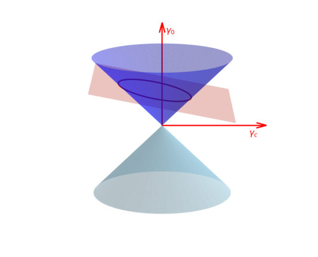
<figcaption class="paper-figure-caption"><b>Fig 1.</b> FIG. 1. The light cone and tilted rotation generated by a non-Hermitian Hamiltonian satisfied the conditions in (39). The rotation is on the tilted plane because γ′ 0 is tilted toward γc direction. The cross-section of the tilted plane with the light cone is the trajectory of the null vector under the transformation.</figcaption>
</figure>
<figure class="paper-figure-card">
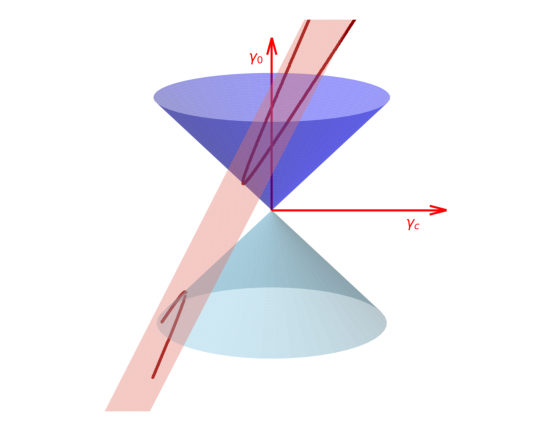
<figcaption class="paper-figure-caption"><b>Fig 2.</b> FIG. 2. The light cone and tilted rotation generated by a non-Hermitian Hamiltonian satisfied the conditions in (62). The boost is on the tilted plane because γ′′′ 0 is tilted toward γc direction. The cross-section of the tilted plane with the future light cone is the trajectory of the null vector under the transformation.</figcaption>
</figure>
<figure class="paper-figure-card">
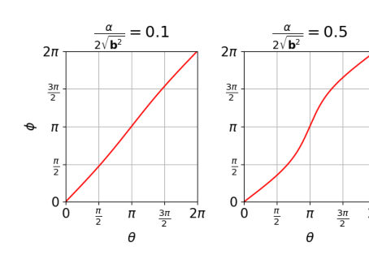
<figcaption class="paper-figure-caption"><b>Fig 3.</b> FIG. 3. The figures show the relation between θ and ϕ for different values of α 2 √</figcaption>
</figure>
</div>

<p><strong>Summary.</strong> This paper generalizes the Bloch sphere concept to non-Hermitian quantum systems by utilizing the Spacetime Algebra. It shows that the state space evolves onto a future light cone, and the dynamics are classified into four geometric types corresponding to Lorentz transformations. This provides a deep geometric understanding of non-unitary evolution, linking it to concepts like exceptional points.</p>
<p><strong>Why it may be interesting.</strong> This work provides a powerful geometric framework connecting non-Hermitian quantum dynamics to fundamental concepts from special relativity (Lorentz transformations), which is highly relevant for understanding open quantum systems and non-unitary evolution in quantum optics.</p>
<details>
<summary>Detailed structure</summary>
<p><strong>Main problem.</strong> The paper aims to establish a geometric generalization of the Bloch sphere for two-level quantum systems when subjected to non-Hermitian Hamiltonians.</p>
<p><strong>Main result.</strong> The state space expands from the standard unit 2-sphere to a future light cone, and the Hamiltonian dynamics are classified into four geometric regimes corresponding to Lorentz transformations.</p>
<p><strong>Method.</strong> The analysis employs the Spacetime Algebra (STA) formulation, lifting the state density operator to the full algebra to analyze non-unitary time evolution.</p>
<p><strong>Model / system.</strong> The system studied is a two-level quantum system (qubit) governed by a general non-Hermitian Hamiltonian, whose time evolution is non-unitary.</p>
<p><strong>Key observables.</strong> The trajectory of the state vector (null vector) on the light cone, and the eigenvalues of the Hamiltonian in different regimes.</p>
<p><strong>Important parameters / regimes.</strong> The relative parameters defining the Hamiltonian, such as $a^2$ vs $b^2$, which determine the geometric class of the dynamics.</p>
<p><strong>Assumptions / limitations.</strong> The core assumption is that lifting the state representation to the full STA is necessary to correctly model non-Hermitian time evolution, which corresponds to Lorentz transformations.</p>
<p><strong>Figures summary.</strong> Figures illustrate the light cone geometry and the trajectories of the state vector under different types of non-Hermitian evolution, particularly highlighting the null rotation case.</p>
<p><strong>Paper structure.</strong> The paper first introduces the generalization of the Bloch sphere using STA, then analyzes the time evolution operator's action, classifying the dynamics into four geometric types (rotations, boosts, null rotations), and finally using this framework to study topological features like exceptional points.</p>
</details>
<details>
<summary>Abstract</summary>
<p>We establish a geometric generalization of the Bloch sphere for two-level quantum systems with non-Hermitian Hamiltonians using the Spacetime Algebra (STA) formulation. By lifting the state density operator from the even subalgebra to the full STA, we show that the state space expands from the unit 2-sphere to a future light cone. The non-unitary time evolution generated by a general non-Hermitian Hamiltonian corresponds to proper orthochronous Lorentz transformations on the null vectors. We classify the Hamiltonian dynamics into four distinct geometric classes: spatial rotations (corresponding to $\mathcal{PT}$-symmetric systems), pure boosts (anti-$\mathcal{PT}$-symmetric systems), null rotations (exceptional points), and general mixtures. We also use this formulation to study several results from PT-symmetric quantum mechanics, including the topological features of the exceptional points.</p>
</details>
<p><sub><a href="#top">↑ back to top</a></sub></p>

<p><a id="paper-2608.22878"></a></p>
<h3 id="spontaneous-currents-determine-capillary-rise-in-active-matter"><a href="http://arxiv.org/abs/2608.22878v1">Spontaneous currents determine capillary rise in active matter</a></h3>
<p><strong>Authors:</strong> Xinyi Dong, Yongfeng Zhao<br>
<strong>Type:</strong> theory · <strong>Category:</strong> statistical mechanics · <strong>PDF:</strong> <a href="https://arxiv.org/pdf/2608.22878v1">https://arxiv.org/pdf/2608.22878v1</a><br>
<strong>Analysis basis:</strong> full PDF text, analyzed in chunks
<strong>Topic relevance:</strong> <code>Keldysh / 2PI / non-Gaussian methods</code> <strong>2/5</strong> · <code>methods for driven-dissipative</code> <strong>2/5</strong> · <code>correlated / nonlocal dissipation</code> <strong>1/5</strong> · <code>driven-dissipative phase transition</code> <strong>1/5</strong> · <code>non-equilibrium universality</code> <strong>1/5</strong></p>
<div class="figure-strip-hint">↔ Scroll figures horizontally</div>
<div class="paper-figures-scroll">
<figure class="paper-figure-card">
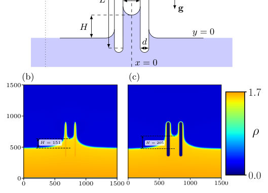
<figcaption class="paper-figure-caption"><b>Fig 1.</b> FIG. 1. (a) Setup of capillary action. The system is confined in y and periodic in x, the top wall is soft and homogeneous so that liquid droplets cannot condensate. Under gravity g, the liquid sits at the bottom of the system. The tube is of width w and length L with impenetrable walls. The tube wall has a hemispherical tip with diameter d. We denote x = 0 at the central axis of tube, and y = 0 at the liquid level far from the tube. The capillary rise H is defined as the height of the meniscus inside the tube. Density field of active systems showing capillary rise with (b) a pointed tube and (c) a round tube with the same gravity, surface tension, and tube width.</figcaption>
</figure>
<figure class="paper-figure-card">
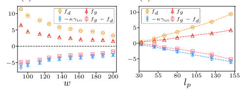
<figcaption class="paper-figure-caption"><b>Fig 2.</b> FIG. 2. Numerical verification of active Jurin’s law (10) with varying (a) tube width w and (b) particles’ persistence length ℓp = v0/Dr. We vary Dr with fixed v0 in panel (b). The contribution of gravity fg is defined in Eq. (7), and the drag of currents fd is measured using f ∗ d = −µ−1 R ∞ −∞[Jy(0, y) − Jy(Lx/2, y)] dy where a finite size correction is considered. The difference fg −fd is verified to be balanced by the force from the liquid-gas surface, given by −κγLG measured using Eq. (9). We fix Dr = 0.05 in panel (a) and w = 150 in panel (b). Other parameters: v0 = 5, ϵ = 50, ϵw = 10, Lx = Ly = 1024, g = 0.015, d = 52.</figcaption>
</figure>
<figure class="paper-figure-card">
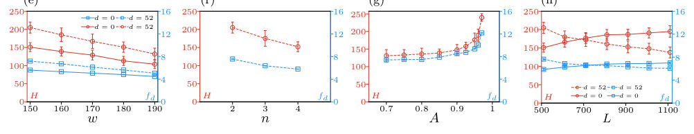
<figcaption class="paper-figure-caption"><b>Fig 3.</b> FIG. 3. Capillary action depends on the global configuration of tubes. (a-d) Density (left) and current (right) fields of systems with (a) a pointed tube, (b) a round tube, and (c-d) multiple tubes. Data averaged using the left-right symmetry. Comparing (b) with (a), round tips mitigate the flow field caused by the geometric discontinuity, thereby reducing the capillary rise. In (b-d), the capillary rise decreases as the number of tubes increases. The amplitudes of the arrows are proportional to log|J/10−6|. Their color encodes their directions. (e) Capillary rise H and current drag fd with pointed tubes (d = 0) and round tubes (d = 52). As the tube width w varies, H is systematically lower...</figcaption>
</figure>
<figure class="paper-figure-card">
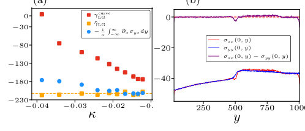
<figcaption class="paper-figure-caption"><b>Fig 4.</b> FIG. 4. (a) γcurve LG measured inside the tube on curved interface with respect to the curvature κ. It is compared with ˜γLG measured at the boundary of the system, where the curvature is negligible. The dashed line shows the average of ˜γLG. The blue dots denote the phenomenological surface tension γ∗ LG. (b) The distribution of σxx and σyy along the central axis of the tube, which exhibits strong anisotropy under the influence of the flow field, the red dashed line indicates x = 0, the tube width w = 100. Parameters: v0 = 5, Dr = 0.05, Lx = Ly = 1024.</figcaption>
</figure>
<figure class="paper-figure-card">
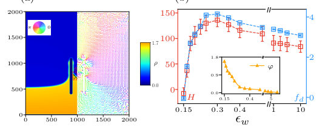
<figcaption class="paper-figure-caption"><b>Fig 5.</b> FIG. 5. Capillary rise in active systems depends non- monotonically on the contact angle. (a) Density (left) and current (right) fields of capillary action in partially-wetting case. (b) The capillary rise H and the drag of currents fd as a function of the wall stiffness ϵw of the tube. Inset shows the contact angle φ as a function of ϵw. Parameters: v0 = 5, Dr = 0.05, g = 0.015, w = 200, ϵ = 50. In panel (a), Lx = Ly = 2000. In panel (b), Lx = Ly = 1024.</figcaption>
</figure>
</div>

<p><strong>Summary.</strong> This work develops an active generalization of Jurin's law for capillary action in active fluids. It shows that the capillary rise is governed by a current-induced drag force, $f_d$, which is a non-equilibrium effect. Crucially, this active contribution makes the capillary rise dependent on the global geometry of the confining tube, not just its local diameter.</p>
<p><strong>Why it may be interesting.</strong> While focused on classical active matter, the derivation of non-equilibrium force balances and the inclusion of current-induced non-local effects are highly relevant to understanding energy dissipation and boundary conditions in open quantum systems.</p>
<details>
<summary>Detailed structure</summary>
<p><strong>Main problem.</strong> The paper investigates the capillary rise in active matter, which deviates significantly from the equilibrium Jurin's law due to the presence of self-propelled active particles.</p>
<p><strong>Main result.</strong> The capillary rise is determined by the self-organized particle currents ($f_d$), leading to an active Jurin's law that depends on the global shape of the tube, not just its diameter.</p>
<p><strong>Method.</strong> The authors derive the active force balance equation by integrating the momentum balance across the liquid-gas interface, leading to a generalized active Jurin's law.</p>
<p><strong>Model / system.</strong> The system models active fluids composed of self-propelled particles confined within a tube, where particle dynamics are governed by Itô-Langevin equations.</p>
<p><strong>Key observables.</strong> Capillary rise (H), active current drag ($f_d$), and the mechanical surface tension ($\gamma_{LG}$).</p>
<p><strong>Important parameters / regimes.</strong> Tube shape (pointed vs. round tips), wall stiffness ($\epsilon_w$), and particle persistence length ($\ell_p$).</p>
<p><strong>Assumptions / limitations.</strong> The analysis relies on force balance equations and makes approximations regarding the bulk liquid/gas isotropy and the limits of system size.</p>
<p><strong>Figures summary.</strong> Figures compare capillary rise dependence on global configuration (tip shape, number of tubes) and show how $H$ and $f_d$ vary with wall stiffness and contact angle.</p>
<p><strong>Paper structure.</strong> The paper builds from the standard force balance equation to derive the active Jurin's law, analyzing the contributions from surface tension, gravity, and the current-induced drag term ($H_J$).</p>
</details>
<details>
<summary>Abstract</summary>
<p>The capillary rise of simple passive fluids in a tube is controlled by the force balance between surface tension and gravity --Jurin's law of capillary action. For fluids composed of active particles interacting via pairwise forces, mechanical surface tension is negative, but a capillary rise was nevertheless reported and remains unexplained. We establish the active form of Jurin's law from the microscopic dynamics. It includes a drag emerging from particle currents that we find responsible for capillary rise. These active currents, alongside negative surface tension, lead to complex and counterintuitive capillary action phenomena that are impossible in equilibrium. In particular the capillary rise of active fluids depends on the shape of the tube, not solely on the tube diameter.</p>
</details>
<p><sub><a href="#top">↑ back to top</a></sub></p>

<p><a id="paper-2608.21701"></a></p>
<h3 id="superdiffusivity-of-random-walks-on-the-three-dimensional-randomly-oriented-manhattan-lattice"><a href="http://arxiv.org/abs/2608.21701v1">Superdiffusivity of random walks on the three-dimensional randomly oriented Manhattan lattice</a></h3>
<p><strong>Authors:</strong> Tuan-Minh Nguyen<br>
<strong>Type:</strong> theory · <strong>Category:</strong> statistical mechanics · <strong>PDF:</strong> <a href="https://arxiv.org/pdf/2608.21701v1">https://arxiv.org/pdf/2608.21701v1</a><br>
<strong>Analysis basis:</strong> full PDF text, analyzed in chunks
<strong>Topic relevance:</strong> <code>Keldysh / 2PI / non-Gaussian methods</code> <strong>2/5</strong> · <code>analog quantum simulation</code> <strong>2/5</strong> · <code>methods for driven-dissipative</code> <strong>2/5</strong></p>
<div class="figure-strip-hint">↔ Scroll figures horizontally</div>
<div class="paper-figures-scroll">
<figure class="paper-figure-card">
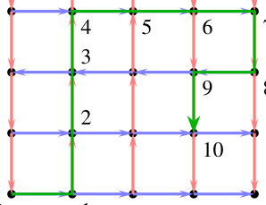
<figcaption class="paper-figure-caption"><b>Fig 1.</b> FIGURE 1. A walk of 10 steps on the two-dimensional randomly oriented Manhattan lattice</figcaption>
</figure>
</div>

<p><strong>Summary.</strong> This paper rigorously analyzes the anomalous diffusion of random walks on a 3D lattice where the axes are randomly oriented. It proves that in this critical dimension, the diffusion coefficient exhibits a specific superdiffusive divergence rate, confirming a long-standing conjecture. The methodology is highly technical, relying on advanced tools from functional analysis and stochastic processes applied to the resolvent operator.</p>
<p><strong>Why it may be interesting.</strong> While focused on classical random walks, the rigorous mathematical techniques involving spectral analysis, operator bounds, and chaos expansions are highly relevant to analyzing transport and dynamics in complex quantum systems, such as disordered quantum Hamiltonians or open quantum systems.</p>
<details>
<summary>Detailed structure</summary>
<p><strong>Main problem.</strong> The paper studies the superdiffusive behavior of random walks on a specific, randomly oriented lattice structure.</p>
<p><strong>Main result.</strong> In the critical dimension $d=3$, the diffusion coefficient is shown to diverge in the Tauberian sense as $\sqrt{\log t}$ with a multiplicative correction involving $(\log\log t)^{\pm(2+\epsilon)}$.</p>
<p><strong>Method.</strong> The analysis employs the resolvent method, utilizing a Rademacher chaos expansion to estimate the Laplace transform of the mean squared displacement.</p>
<p><strong>Model / system.</strong> The model is a continuous-time random walk on the three-dimensional randomly oriented Manhattan lattice ($\mathbb{Z}^d$). The environment is random, assigning independent directions (forward/backward) to each axis-aligned line.</p>
<p><strong>Key observables.</strong> Diffusion coefficient, Mean squared displacement $E[|X_t|^2]$, and the Laplace transform of the mean squared displacement $D(\lambda)$.</p>
<p><strong>Important parameters / regimes.</strong> The critical dimension $d=3$, and the small parameter $\lambda$ used in the resolvent analysis.</p>
<p><strong>Assumptions / limitations.</strong> The random environment is assumed to be stationary and doubly stochastic. The proof relies on bounding operators using recursive inequalities derived from the chaos expansion.</p>
<p><strong>Paper structure.</strong> The paper establishes the problem context, relates the mean squared displacement to the resolvent of the generator, and then uses a recursive operator bounding technique (via chaos expansion) to derive the asymptotic bounds leading to the main theorem.</p>
</details>
<details>
<summary>Abstract</summary>
<p>We study the superdiffusive behavior of random walks on the randomly oriented Manhattan lattice, i.e., the $d$-dimensional integer lattice $\mathbb{Z}^d$ where each axis-aligned line is independently assigned a random direction (forward or backward) with equal probability. The walker takes nearest-neighbor steps, choosing an axis randomly and moving along the assigned direction of that axis's line, with equal probabilities for each axis. We show that, in the critical dimension $d=3$, the diffusion coefficient of the random walk diverges in the Tauberian sense as $\sqrt{\log t}$ with a multiplicative correction $(\log\log t)^{\pm(2+\varepsilon)}$ as time $t\to\infty$. This gives an answer to a conjecture by Ledger, Tóth and Valkó (2018).</p>
</details>
<p><sub><a href="#top">↑ back to top</a></sub></p>

<p><a id="paper-2608.21588"></a></p>
<h3 id="neural-network-field-theory-at-finite-width"><a href="http://arxiv.org/abs/2608.21588v1">Neural Network Field Theory at Finite Width</a></h3>
<p><strong>Authors:</strong> Christian Ferko, Aaron Mutchler<br>
<strong>Type:</strong> theory · <strong>Category:</strong> disordered systems and neural networks · <strong>PDF:</strong> <a href="https://arxiv.org/pdf/2608.21588v1">https://arxiv.org/pdf/2608.21588v1</a><br>
<strong>Analysis basis:</strong> full PDF text, analyzed in chunks
<strong>Topic relevance:</strong> <code>Keldysh / 2PI / non-Gaussian methods</code> <strong>2/5</strong> · <code>methods for driven-dissipative</code> <strong>2/5</strong> · <code>analog quantum simulation</code> <strong>1/5</strong></p>
<div class="figure-strip-hint">↔ Scroll figures horizontally</div>
<div class="paper-figures-scroll">
<figure class="paper-figure-card">
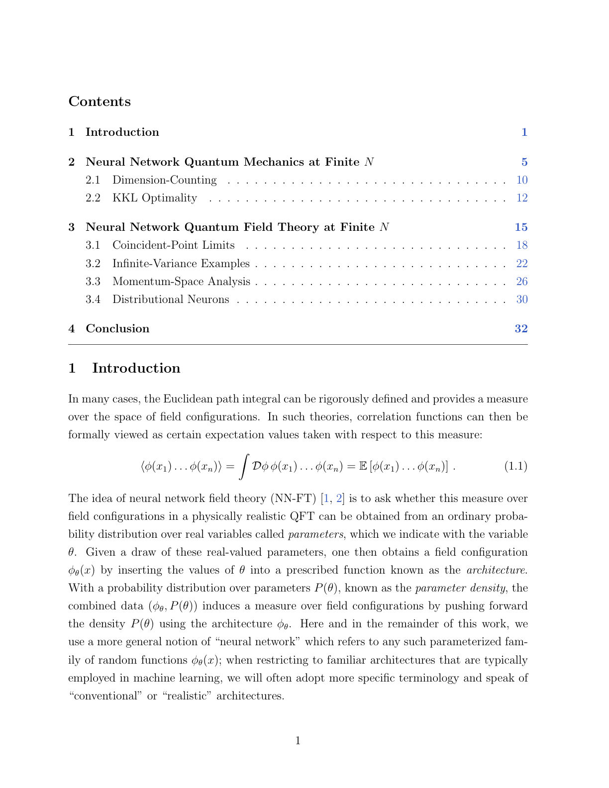
<figcaption class="paper-figure-caption"><b>Fig 1.</b> Low-resolution page preview, page 2</figcaption>
</figure>
<figure class="paper-figure-card">
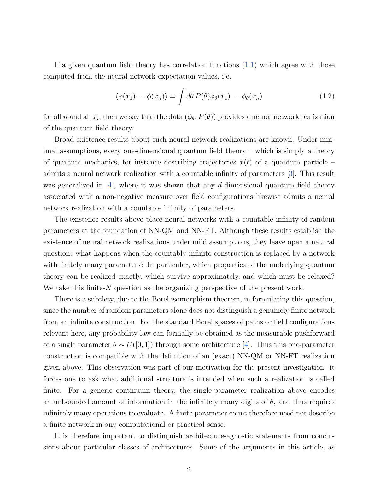
<figcaption class="paper-figure-caption"><b>Fig 2.</b> Low-resolution page preview, page 3</figcaption>
</figure>
<figure class="paper-figure-card">
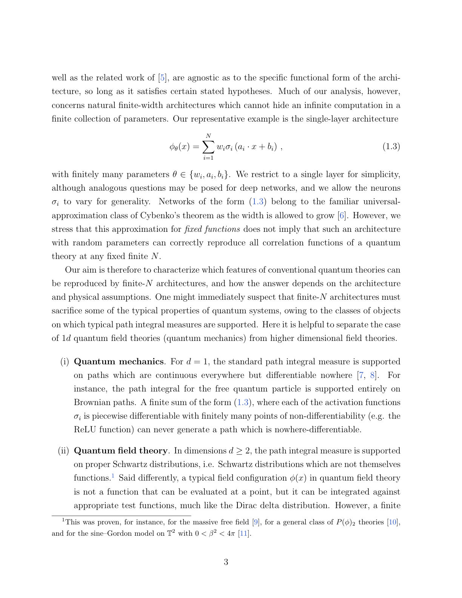
<figcaption class="paper-figure-caption"><b>Fig 3.</b> Low-resolution page preview, page 4</figcaption>
</figure>
<figure class="paper-figure-card">
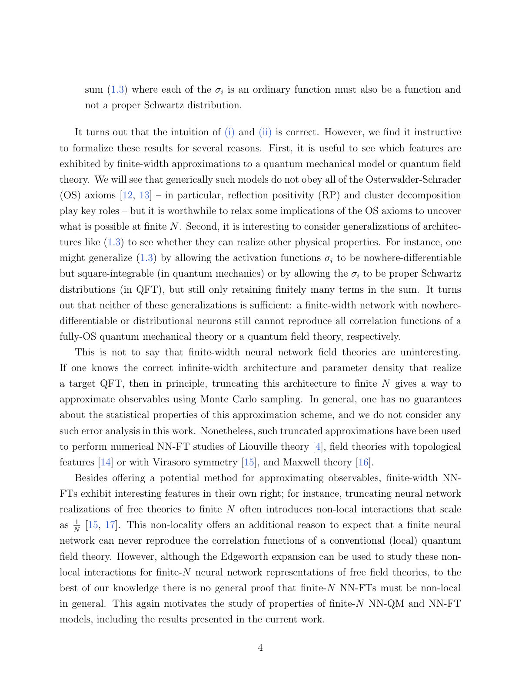
<figcaption class="paper-figure-caption"><b>Fig 4.</b> Low-resolution page preview, page 5</figcaption>
</figure>
<figure class="paper-figure-card">
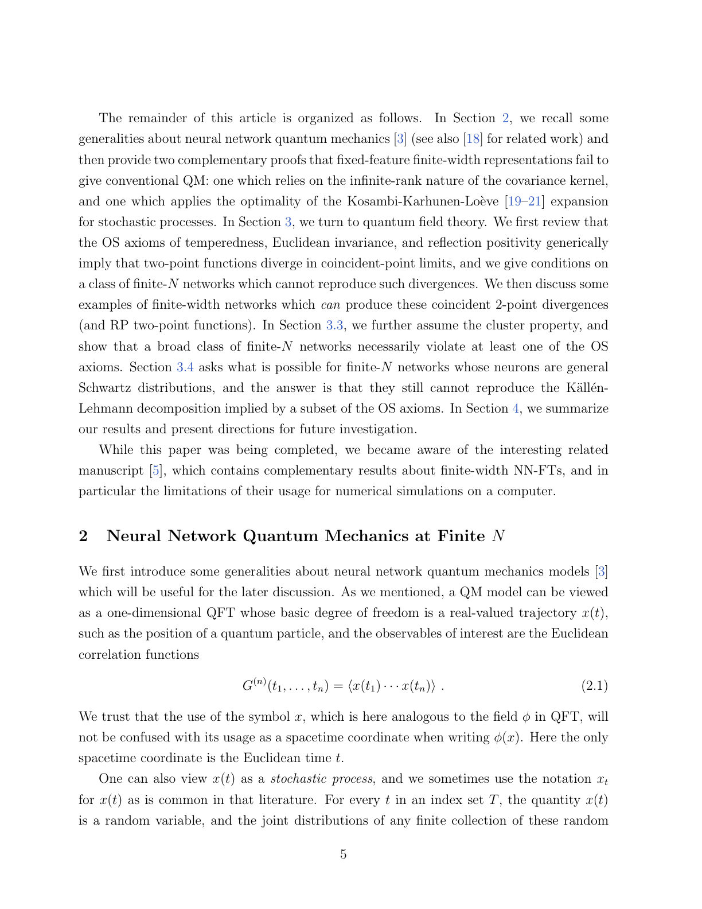
<figcaption class="paper-figure-caption"><b>Fig 5.</b> Low-resolution page preview, page 6</figcaption>
</figure>
</div>

<p><strong>Summary.</strong> This work explores the theoretical limits of representing quantum field theories using neural networks with a finite number of parameters. The authors demonstrate that such finite truncations generically fail to satisfy core physical axioms, such as reflection positivity, because the underlying mathematical structure required by QFTs is too complex for finite sums to capture. This sets a fundamental boundary on what ML models can simulate in quantum physics.</p>
<p><strong>Why it may be interesting.</strong> It provides a rigorous theoretical constraint on the complexity of physical theories that can be encoded or simulated by finite-parameter machine learning models, linking fundamental physics axioms to computational limitations.</p>
<details>
<summary>Detailed structure</summary>
<p><strong>Main problem.</strong> The paper investigates whether Quantum Mechanical (QM) and Quantum Field Theory (QFT) models can be accurately represented using Neural Networks (NNs) with a finite number of parameters.</p>
<p><strong>Main result.</strong> Generically, finite-width NN models are incapable of reproducing the correlation functions of conventional, non-trivial QFTs or QM systems because they violate fundamental properties like reflection positivity or cluster decomposition.</p>
<p><strong>Method.</strong> The authors compare the correlation functions derived from finite-width NN architectures (e.g., using finite sums of basis functions) against the known requirements of QFTs, such as the Källén-Lehmann representation.</p>
<p><strong>Model / system.</strong> The study concerns the representation of quantum systems, ranging from 1D QM models (path integrals) to general QFTs, using NN ensembles parameterized by a finite set of weights.</p>
<p><strong>Key observables.</strong> Correlation functions $\langle \phi(x_1) \cdots \phi(x_n) 
angle$, the connected two-point function (covariance kernel), and the adherence to the Källén-Lehmann representation.</p>
<p><strong>Important parameters / regimes.</strong> The crucial parameter is the finite width $N$ of the neural network architecture, contrasting with the infinite parameters required for exact representation.</p>
<p><strong>Assumptions / limitations.</strong> The analysis assumes the existence of a true QFT obeying standard axioms (like OS axioms) and focuses on the limitations imposed by truncating the representation to finite $N$.</p>
<p><strong>Paper structure.</strong> The paper first establishes the general framework for NN representations of QFTs, then analyzes the 1D QM case using the two-point function, and finally extends the obstruction argument to general QFTs by considering distributional neurons.</p>
</details>
<details>
<summary>Abstract</summary>
<p>Under mild assumptions, any quantum mechanical (QM) model or quantum field theory (QFT) admits a representation in terms of an ensemble of neural networks with countably many random parameters. We investigate the features of NN-QM and NN-FT models with finitely many parameters, such as a feedforward network of width $N < \infty$. We find that, generically, such models must violate one of the properties of conventional Euclidean QFTs, such as reflection positivity or cluster decomposition. We present several complementary ways of understanding which features can and cannot be preserved at finite $N$, both in QM and in QFT.</p>
</details>
<p><sub><a href="#top">↑ back to top</a></sub></p>

<p><a id="paper-2608.23389"></a></p>
<h3 id="exact-fock-state-preparation-with-math642math-circuit-depth"><a href="http://arxiv.org/abs/2608.23389v1">Exact Fock-State Preparation with $n^{1/4}$ Circuit Depth</a></h3>
<p><strong>Authors:</strong> Tanay Roy<br>
<strong>Type:</strong> theory · <strong>Category:</strong> other · <strong>PDF:</strong> <a href="https://arxiv.org/pdf/2608.23389v1">https://arxiv.org/pdf/2608.23389v1</a><br>
<strong>Analysis basis:</strong> full PDF text, analyzed in chunks
<strong>Topic relevance:</strong> <code>analog quantum simulation</code> <strong>2/5</strong> · <code>Tavis-Cummings &amp; cavity-many-emitter</code> <strong>1/5</strong> · <code>quantum measurements</code> <strong>1/5</strong></p>
<div class="figure-strip-hint">↔ Scroll figures horizontally</div>
<div class="paper-figures-scroll">
<figure class="paper-figure-card">
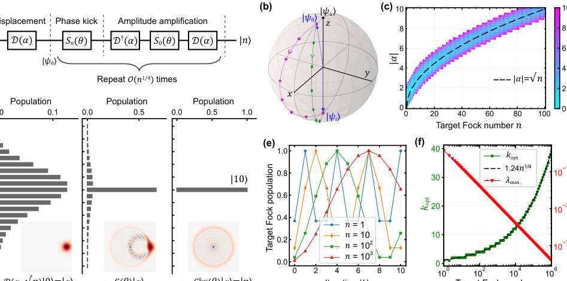
<figcaption class="paper-figure-caption"><b>Fig 1.</b> FIG. 1. Deterministic Fock-state preparation. (a) Circuit based on phase kicks and amplitude amplification; the bracketed gates form one iterate G(θ) = Sr(θ)So(θ). (b) Trajectories from |α = √</figcaption>
</figure>
<figure class="paper-figure-card">
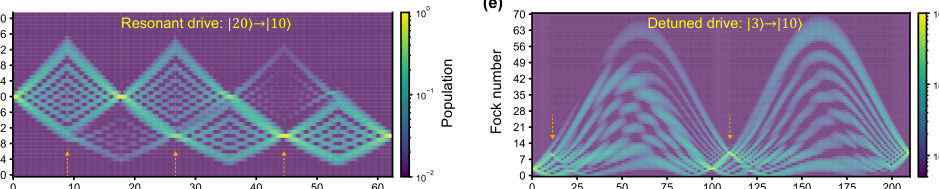
<figcaption class="paper-figure-caption"><b>Fig 2.</b> FIG. 2. Generalized protocol. (a) Circuit for a finite- or infinite-dimensional system, with |ψ0⟩= U|m⟩and λ = |⟨ψt|ψ0⟩|2 &gt; 0. The oracle addresses multiple basis states. (b) Coherent-state trajectories under resonant (blue) and detuned (red) drives. (c) Fock populations (top panel) and density-matrix elements (bottom panel) for a 21-dimensional system starting from |10⟩, with targets {|3⟩, |15⟩, |16⟩}, λ = 0.156, and kopt = 2. (d) Resonant-drive transfer with λ = 0.075 and θ = 1.900; orange dashed lines mark instantaneous phase kicks. (e) Detuned-drive transfer with λ = 0.101, ∆/2π = 10 MHz, and θ = 2.679.</figcaption>
</figure>
<figure class="paper-figure-card">
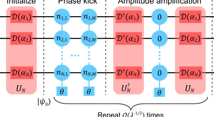
<figcaption class="paper-figure-caption"><b>Fig 3.</b> FIG. 3. Multipartite-state preparation. Local displace- ments or a general unitary prepare |ψ0⟩in N bosonic modes or qudits. Generalized controlled-phase gates address the tar- get components, while the diffusion step applies a controlled phase to |0⟩⊗N.</figcaption>
</figure>
</div>

<p><strong>Summary.</strong> The paper introduces a novel, deterministic protocol to prepare large Fock states in bosonic systems by framing the task as a two-dimensional amplitude amplification problem. This method requires only displacements and number-selective phase gates, achieving a crucial sublinear scaling of $O(n^{1/4})$ in circuit depth. This breakthrough offers a scalable route for implementing complex quantum simulations on platforms like cavity QED.</p>
<p><strong>Why it may be interesting.</strong> This work provides a highly scalable, gate-level blueprint for generating highly excited nonclassical states, which is a major technological bottleneck for scaling bosonic quantum simulations and quantum computing architectures.</p>
<details>
<summary>Detailed structure</summary>
<p><strong>Main problem.</strong> The core problem is achieving efficient, deterministic, and high-fidelity preparation of large Fock states ($|n
angle$) in bosonic quantum systems.</p>
<p><strong>Main result.</strong> A deterministic one-parameter (D1p) protocol was developed that achieves this preparation with an iteration count scaling sublinearly as $O(n^{1/4})$.</p>
<p><strong>Method.</strong> The protocol maps Fock-state preparation onto a two-dimensional amplitude amplification problem, utilizing only displacement operations and number-selective phase kicks.</p>
<p><strong>Model / system.</strong> The work focuses on bosonic modes, applicable to platforms like cavity QED, trapped ions, and optomechanics. The underlying physics involves coherent states, Fock states, and controlled unitary operations.</p>
<p><strong>Key observables.</strong> Fock state population ($|n
angle$), fidelity, and the required number of iterations ($k_{	ext{opt}}$).</p>
<p><strong>Important parameters / regimes.</strong> The scaling factor $n^{1/4}$ for iteration count, the initial coherent state amplitude $\alpha \simeq \sqrt{n}$, and the overlap $\lambda$.</p>
<p><strong>Assumptions / limitations.</strong> The ideal model assumes perfect phase matching and instantaneous, perfectly selective phase kicks, though the scaling remains favorable even when considering finite-duration gates.</p>
<p><strong>Figures summary.</strong> Figures illustrate the circuit diagram for the D1p protocol, showing state evolution trajectories from coherent states to Fock states, and demonstrating the scaling of iteration counts.</p>
<p><strong>Paper structure.</strong> The paper introduces the D1p protocol by recasting the problem as amplitude amplification. It details the required controls (displacements and phase kicks) and presents the scaling analysis ($O(n^{1/4})$). Extensions are shown for state transfer, multi-target cat states, and multipartite systems.</p>
</details>
<details>
<summary>Abstract</summary>
<p>Efficient, deterministic, and high-fidelity preparation of large Fock states is essential for scaling bosonic quantum technologies and exploring quantum phenomena at large excitation energies. We introduce a deterministic one-parameter (D1p) protocol that maps Fock-state preparation in an infinite-dimensional Hilbert space onto two-dimensional amplitude amplification. Starting from a coherent state with $|α|\simeq\sqrt{n}$, the initial target-state population scales as $n^{-1/2}$, yielding an iteration count and circuit depth of $\mathcal{O}(n^{1/4})$. Phase matching guarantees unit fidelity in the ideal model; remarkably, preparing $|{10^6}\rangle$ requires only 39 iterations. The protocol uses only displacements and number-selective phase operations, requires no numerical optimization, and further extends to state transfer, general superpositions, finite-dimensional systems, and multipartite entangled states. In the large-amplitude regime, its multi-target form prepares $L$-legged cat states with an iteration count determined only by $L$; cats with up to ten legs require only two iterations, independent of the coherent-state amplitude. This framework provides a broadly applicable route to highly excited bosonic states on platforms supporting these elementary controls.</p>
</details>
<p><sub><a href="#top">↑ back to top</a></sub></p>

<p><a id="paper-2608.23316"></a></p>
<h3 id="exact-quasiprobability-hierarchy-of-the-double-morse-oscillator-from-potential-geometry-to-operator-ordering"><a href="http://arxiv.org/abs/2608.23316v1">Exact Quasiprobability Hierarchy of the Double-Morse Oscillator: From Potential Geometry to Operator Ordering</a></h3>
<p><strong>Authors:</strong> F. Chogle, B. Teklu, M. F. Pereira<br>
<strong>Type:</strong> theory · <strong>Category:</strong> other · <strong>PDF:</strong> <a href="https://arxiv.org/pdf/2608.23316v1">https://arxiv.org/pdf/2608.23316v1</a><br>
<strong>Analysis basis:</strong> full PDF text, analyzed in chunks
<strong>Topic relevance:</strong> <code>Keldysh / 2PI / non-Gaussian methods</code> <strong>2/5</strong> · <code>quantum measurements</code> <strong>2/5</strong></p>
<div class="figure-strip-hint">↔ Scroll figures horizontally</div>
<div class="paper-figures-scroll">
<figure class="paper-figure-card">
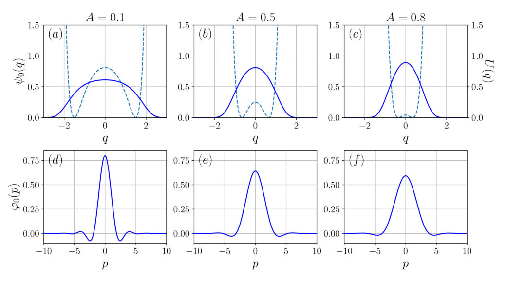
<figcaption class="paper-figure-caption"><b>Fig 1.</b> FIG. 1. Ground-state position- and momentum-space wavefunctions of the quasi-exact double-Morse oscillator for µ = 1. Top row, panels (a)–(c): position-space amplitude ψ0(q) from Eq. (8), shown as a solid curve, together with the dimensionless potential U(q) = [A cosh(2q) −1]2, shown as a dashed curve. Bottom row, panels (d)–(f): momentum-space amplitude φ0(p) from Eq. (12). Columns correspond, from left to right, to A = 0.1, 0.5, and 0.8. The dimensionless coordinates are q = αx/2 and p = 2Px/(ℏα). As A increases, ψ0(q) narrows, whereas φ0(p) broadens and its oscillatory side lobes weaken. For 0 &lt; A &lt; 1, the potential is double-welled, while the n = 0 quasi-exact ground-state amplitude...</figcaption>
</figure>
<figure class="paper-figure-card">
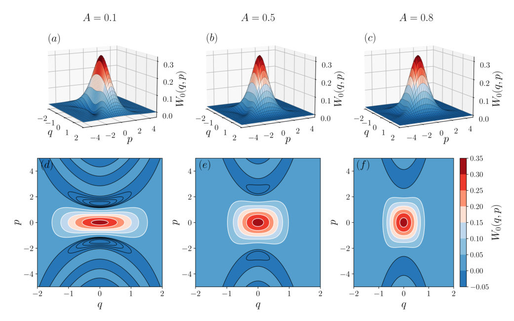
<figcaption class="paper-figure-caption"><b>Fig 2.</b> FIG. 2. Three-dimensional surface plots (top row, panels (a)–(c)) and signed two-dimensional contour maps (bottom row, panels (d)–(f)) of the ground-state Wigner function W0(q, p), Eq. (20), for µ = 1. Columns correspond, from left to right, to A = 0.1, 0.5, and 0.8. Both rows represent the full signed Wigner function. Owing to the viewing angle and the comparatively small vertical extent of the negative lobes, the negative regions are less visually prominent in the surface plots and are more readily identified in the contour maps. White contours denote positive levels, while black contours denote zero and negative levels. As A increases, the central positive region narrows along q and...</figcaption>
</figure>
<figure class="paper-figure-card">
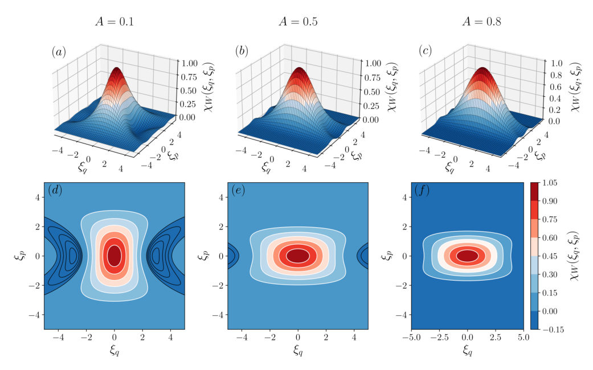
<figcaption class="paper-figure-caption"><b>Fig 3.</b> FIG. 3. Three-dimensional surface plots (top row, panels (a)–(c)) and signed two-dimensional contour maps (bottom row, panels (d)–(f)) of the exact Weyl characteristic function χW (ξq, ξp), Eq. (22), for the quasi-exact double-Morse ground state with µ = 1. Columns correspond, from left to right, to A = 0.1, 0.5, and 0.8. Both rows represent the full signed characteristic function. Owing to the viewing angle and the comparatively small vertical extent of the negative side lobes, the negative regions are less visually prominent in the surface plots and are more readily identified in the contour maps. The function is real and even in both variables and satisfies χW (0, 0) = 1. White contours...</figcaption>
</figure>
<figure class="paper-figure-card">
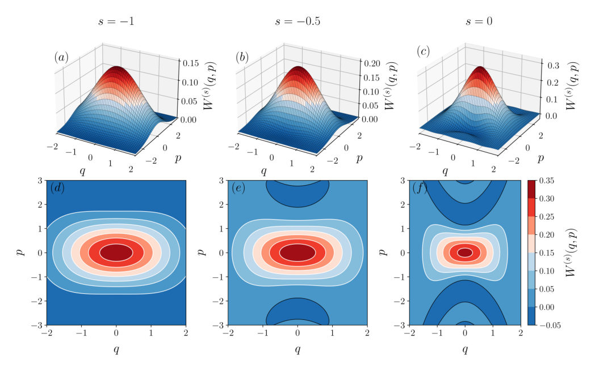
<figcaption class="paper-figure-caption"><b>Fig 4.</b> FIG. 4. Three-dimensional surface plots (top row, panels (a)–(c)) and signed two-dimensional contour maps (bottom row, panels (d)–(f)) of the Cahill–Glauber s-ordered quasiprobability distributions W (s)(q, p) for the quasi-exact double-Morse ground state with µ = 1 and A = 0.1. From left to right, s = −1, −0.5, and 0, corresponding to the Husimi endpoint W (−1), an intermediate Gaussian-smoothed distribution, and the Wigner function W (0) = W0, respectively. Negative regions are more readily identified in the contour maps than in the corresponding three-dimensional surface plots. White contours denote positive levels, while black contours denote the zero and negative levels. The top-row...</figcaption>
</figure>
<figure class="paper-figure-card">
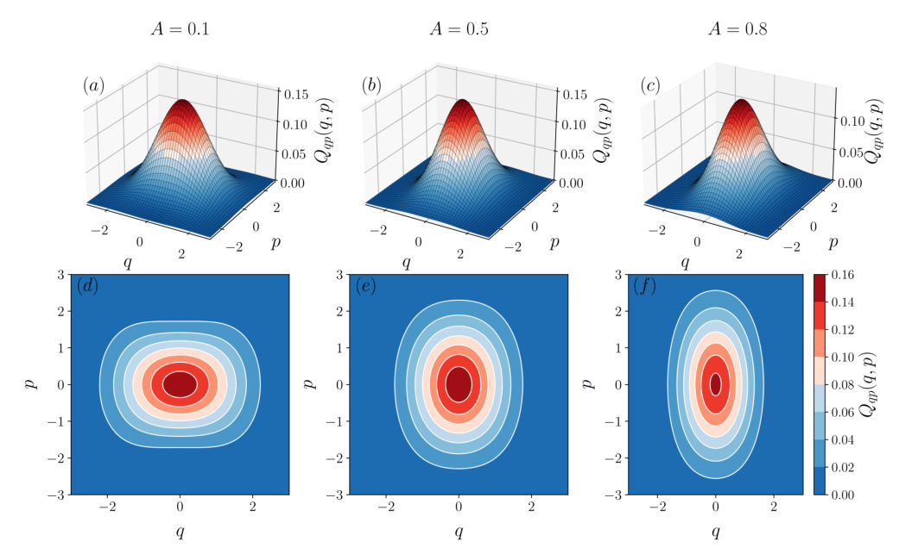
<figcaption class="paper-figure-caption"><b>Fig 5.</b> FIG. 5. Three-dimensional surface plots (top row, panels (a)–(c)) and two-dimensional contour maps (bottom row, panels (d)– (f)) of the q, p-normalized Husimi distribution Qqp(q, p) ≡1</figcaption>
</figure>
</div>

<p><strong>Summary.</strong> This paper provides a detailed, exact analysis of the ground state of the double-Morse oscillator using various quasiprobability distributions. It rigorously separates the physical effects of changing the potential geometry (controlled by $A$) from the mathematical artifacts introduced by the choice of phase-space representation (controlled by $s$). The key finding is that the nonclassical structure is robustly separated from the physical state evolution.</p>
<p><strong>Why it may be interesting.</strong> This work provides a rigorous, quantitative benchmark for nonlinear phase-space methods, crucial for understanding quantum dynamics in anharmonic potentials where simple harmonic approximations fail.</p>
<details>
<summary>Detailed structure</summary>
<p><strong>Main problem.</strong> To develop an exact, representation-consistent analysis that separates physical changes in phase-space geometry from changes introduced solely by the choice of quasiprobability representation.</p>
<p><strong>Main result.</strong> The study demonstrates that the Hamiltonian parameter ($A$) controls the physical geometry, while the ordering parameter ($s$) controls the appearance of non-Gaussian, nonclassical structure across different phase-space representations.</p>
<p><strong>Method.</strong> The authors use phase-space methods, calculating the Wigner and Weyl characteristic functions for the ground state, and analyzing the full Cahill–Glauber $s$-parameterized hierarchy.</p>
<p><strong>Model / system.</strong> The system analyzed is the symmetric double-Morse oscillator, governed by a potential $V(x) = D [A \cosh(\alpha x) - 1]^2$. The analysis focuses on the lowest quasi-exact ground state.</p>
<p><strong>Key observables.</strong> Wigner function (negative regions, non-Gaussianity), Weyl characteristic function, Husimi distribution (non-negativity), and Glauber–Sudarshan P-representation (distributional nature).</p>
<p><strong>Important parameters / regimes.</strong> The potential geometry is controlled by the parameter $A$, while the representation resolution is controlled by the Cahill–Glauber ordering parameter $s$.</p>
<p><strong>Assumptions / limitations.</strong> The analysis focuses on the quasi-exact sector ($\mu=1$) and assumes the separation of physical control ($A$) from representational control ($s$) is possible.</p>
<p><strong>Figures summary.</strong> Figures illustrate the ground-state wavefunctions ($\psi_0(q)$ and $\varphi_0(p)$) for varying $A$, showing the localization trade-off, and demonstrate how the principal $A$-dependent geometry remains visible even after coherent-state coarse-graining.</p>
<p><strong>Paper structure.</strong> The paper establishes the physical model (double-Morse oscillator), introduces the mathematical tools (quasiprobability representations), and then systematically analyzes how varying the physical parameter ($A$) versus the representation parameter ($s$) affects the resulting phase-space distributions.</p>
</details>
<details>
<summary>Abstract</summary>
<p>Phase-space and quasiprobability methods play key roles across quantum technologies, characterizing localization, non-Gaussianity, nonclassical resources, and coarse-graining. We present a representation-consistent analysis of the lowest quasi-exact ground state of the symmetric double-Morse oscillator. The parameter $A$ changes the potential geometry and physical state, whereas the Cahill--Glauber ordering parameter $s$ changes only the representation and phase-space resolution of a fixed density operator. Although the potential is double-welled for $0<A<1$, the exact ground-state amplitude is single-peaked at the origin and lies above the internal barrier; as $A$ approaches unity, the merged well remains locally quartic rather than harmonic. We obtain closed expressions for the Wigner function and Weyl characteristic function. The Wigner function shows the $A$-dependent exchange between position and momentum localization and retains negative regions, certifying nonclassicality and, for this pure state, non-Gaussianity. The Weyl function gives the Fourier-dual description, generates symmetrically ordered moments and cumulants, and yields the full $s$-ordered hierarchy. For $s<0$, isotropic Gaussian smoothing suppresses fine sign-changing structure while preserving the large-scale localization envelope. The Husimi endpoint is nonnegative without implying classicality, whereas the Glauber--Sudarshan $P$ representation remains distributional and does not define a regular positive coherent-state mixture. Thus, the reduced visual extent of Wigner-negative regions as $A$ increases is not classicalization: $A$ controls the physical geometry, while $s$ controls how the same non-Gaussian, nonclassical structure appears across complementary representations. This separation provides an exact benchmark for nonlinear phase-space methods. theory.</p>
</details>
<p><sub><a href="#top">↑ back to top</a></sub></p>

<p><a id="paper-2608.23519"></a></p>
<h3 id="run-and-tumble-particles-with-preferred-reorientation"><a href="http://arxiv.org/abs/2608.23519v1">Run-and-tumble particles with preferred reorientation</a></h3>
<p><strong>Authors:</strong> Callum Britton, Ziluo Zhang, Seongjun Han, Thibault Bertrand<br>
<strong>Type:</strong> theory · <strong>Category:</strong> statistical mechanics · <strong>PDF:</strong> <a href="https://arxiv.org/pdf/2608.23519v1">https://arxiv.org/pdf/2608.23519v1</a><br>
<strong>Analysis basis:</strong> full PDF text, analyzed in chunks
<strong>Topic relevance:</strong> <code>Keldysh / 2PI / non-Gaussian methods</code> <strong>2/5</strong> · <code>methods for driven-dissipative</code> <strong>2/5</strong></p>
<div class="figure-strip-hint">↔ Scroll figures horizontally</div>
<div class="paper-figures-scroll">
<figure class="paper-figure-card">
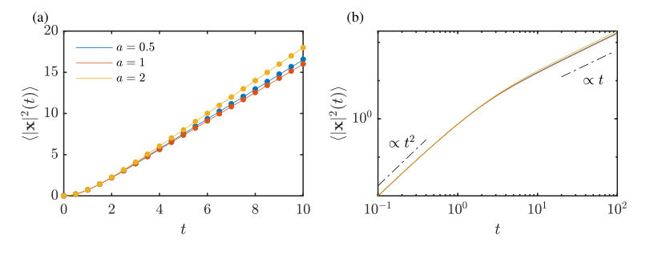
<figcaption class="paper-figure-caption"><b>Fig 1.</b> Figure 1. Mean squared displacement – The MSD, Eq. (28), of an RTP with reorientation distribution given by Eq. (23) with a ∈{0.5, 1, 2} and β = 0.8. Here, we use the following parameters: D = 0; v = 1; α = 1; x0 = 0; θ0 = 0. The MSD is respectively plotted on both (a) a linear scale for comparison with numerical data and (b) a log-linear scale to show the distinct scaling with t. The symbols indicate simulation data and solid lines indicate the analytic result, Eq. (28). The dashed lines in panel (b) indicate respectively a ballistic behavior ∝t2 and a diffusive behavior ∝t.</figcaption>
</figure>
<figure class="paper-figure-card">
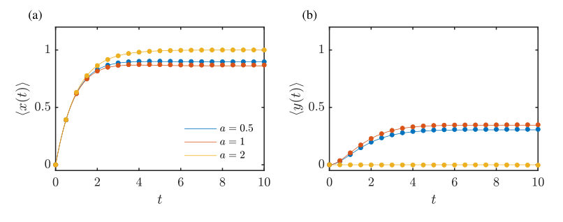
<figcaption class="paper-figure-caption"><b>Fig 2.</b> Figure 2. Mean Displacements – The mean displacements, Eqs. (34a) and (34b), of an RTP with reorientation distribution given by Eq. (23) with a ∈{0.5, 1, 2} and β = 0.8. Here, we use the following parameters: D = 0; v = 1; α = 1; x0 = 0; θ0 = 0. Each panel respectively corresponds to (a) the mean displacement in the x direction ⟨x(t)⟩, Eq. (34a), and (b) the mean displacement in the y direction ⟨y(t)⟩, Eq. (34b). The symbols indicate simulation data and solid lines indicate analytic results, Eqs. (34a) and (34b).</figcaption>
</figure>
<figure class="paper-figure-card">
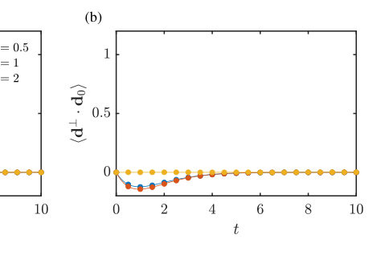
<figcaption class="paper-figure-caption"><b>Fig 3.</b> Figure 3. Orientation autocorrelators – The orientation autocorrelators, Eqs. (40) and (44b), of an RTP with reorientation distribution given by Eq. (23) with a ∈{0.5, 1, 2} and β = 0.8. Here, we use the following parameters: D = 0; v = 1; α = 1; x0 = 0; θ0 = 0. Each panel respectively corresponds to (a) the orientation autocorrelator ⟨d · d0⟩,Eq. (40) and (b) the perpendicular orientation correlator ⟨d⊥· d0⟩, Eq. (44b). The symbols indicate simulation data and solid lines indicate analytic results, Eqs. (40) and (44b).</figcaption>
</figure>
<figure class="paper-figure-card">
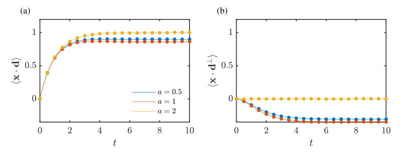
<figcaption class="paper-figure-caption"><b>Fig 4.</b> Figure 4. Position-orientation cross-correlators – The position-orientation cross-correlators, Eqs. (47) and (48), of an RTP with reorientation distribution given by Eq. (23) with a ∈{0.5, 1, 2} and β = 0.8. Here, we use the following parameters: D = 0; v = 1; α = 1; x0 = 0; θ0 = 0. Each panel respectively corresponds to (a) the position-orientation cross-correlators ⟨x · d⟩, Eq. (47), and (b) the position-perpendicular orientation cross-correlators ⟨x · d⊥⟩, Eq. (48). The symbols indicate simulation data and solid lines indicate analytic results, Eqs. (47) and (48).</figcaption>
</figure>
<figure class="paper-figure-card">
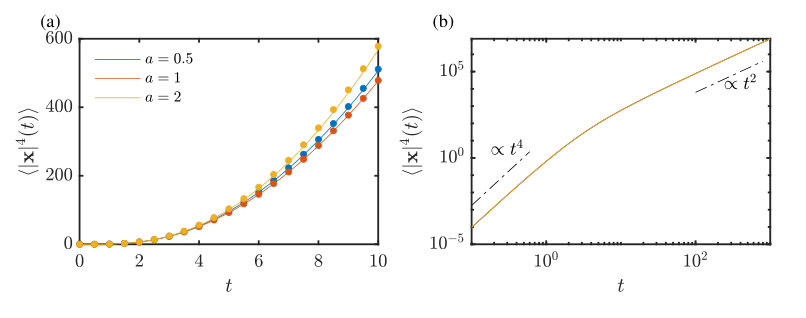
<figcaption class="paper-figure-caption"><b>Fig 5.</b> Figure 5. Fourth spatial moment – The fourth spatial moment, Eq. (51), of an RTP with reorientation distribution given by Eq. (23) with a ∈{0.5, 1, 2} and β = 0.8. Here, we use the following parameters: D = 0; v = 1; α = 1; x0 = 0; θ0 = 0. The fourth moment is respectively plotted on both (a) a linear scale for comparison with numerical data and (b) a log-linear scale to show the distinct scaling with t. The symbols indicate simulation data and solid lines indicate the numerically integrated result from Eq. (51). The dashed lines in panel (b) indicate a transition from ballistic behavior ∝t4 to diffusive behavior ∝t2.</figcaption>
</figure>
</div>

<p><strong>Summary.</strong> This work develops an exact Doi-Peliti field theory to analyze run-and-tumble particles with arbitrary, non-uniform reorientation probabilities. By mapping the dynamics onto chiral active Brownian particles, the authors establish a direct quantitative link between the shape of the tumble distribution and emergent transport properties like effective chirality and diffusion. This provides a powerful theoretical framework for studying complex active matter systems.</p>
<p><strong>Why it may be interesting.</strong> The rigorous field-theoretic approach provides a powerful, systematic tool for characterizing non-equilibrium active matter dynamics, linking microscopic directional biases (tumble shape) to macroscopic transport properties (MSD).</p>
<details>
<summary>Detailed structure</summary>
<p><strong>Main problem.</strong> The study investigates the dynamics of run-and-tumble particles (RTPs) when the reorientation (tumble) probabilities are non-uniform, moving beyond the standard uniform assumption.</p>
<p><strong>Main result.</strong> The dynamics can be rigorously mapped to those of chiral active Brownian particles (cABPs), and the Mean Squared Displacement (MSD) can be calculated in $d$ dimensions using an effective persistence time ($\Lambda$).</p>
<p><strong>Method.</strong> The authors derive and utilize an exact Doi-Peliti (DP) field theory formalism, calculating expectation values via path integrals in Fourier space.</p>
<p><strong>Model / system.</strong> The system models active microswimmers (RTPs) whose orientation changes according to a general, non-uniform tumble distribution $\Pi(\psi)$. The dynamics are governed by a Fokker-Planck equation.</p>
<p><strong>Key observables.</strong> Mean Squared Displacement (MSD), effective persistence ($\Lambda$), effective chirality ($\Omega$), and higher-order spatial moments.</p>
<p><strong>Important parameters / regimes.</strong> The first Fourier modes ($\Pi_{\pm 1}$) of the tumble distribution, the tumble rate ($\alpha$), and the spatial dimension ($d$).</p>
<p><strong>Assumptions / limitations.</strong> The analysis relies on the DP field theory structure and often assumes non-chiral or specific forms (like von Mises-Fisher) for the tumble distribution to simplify the mapping.</p>
<p><strong>Figures summary.</strong> Figures illustrate the MSD vs. time for various dimensions ($d=2, 3, 4, 5$) using the von Mises-Fisher distribution, comparing simulation data to analytical results.</p>
<p><strong>Paper structure.</strong> The paper develops the DP field theory for general tumble distributions, calculates single-particle observables like MSD, and extends the framework to $d$ dimensions, linking the tumble distribution's Fourier modes to effective particle parameters.</p>
</details>
<details>
<summary>Abstract</summary>
<p>Run-and-tumble particles (RTPs) are canonically modeled with uniform reorientation probabilities, an assumption that breaks down for many biological microswimmers. In this work, we investigate the dynamics of RTPs with arbitrary non-uniform tumble distributions. By deriving an exact Doi-Peliti field theory, we explicitly calculate a wide array of spatial and orientational observables. Notably, we demonstrate that the spatial dynamics exhibit an effective persistence and chirality governed entirely by the first Fourier modes of the tumble distribution, establishing a formal mapping to the dynamics of chiral active Brownian particles. Furthermore, our field-theoretic framework provides a systematic method to compute spatial moments to arbitrary order, allowing for the complete characterization and identification of complex tumbling dynamics. We illustrate the framework with wrapped Gaussian and bimodal Gaussian distributions, demonstrating explicit control over persistence and chirality. We further extend the field theory to $d$ dimensions, recovering the mean squared displacement in terms of a single effective tumble rate. Our results establish a direct link between the shape of the tumble distribution and the emergent dynamics, and provide a foundation for the study of interacting RTPs with non-uniform reorientation.</p>
</details>
<p><sub><a href="#top">↑ back to top</a></sub></p>

<p><a id="paper-2608.22658"></a></p>
<h3 id="a-margolus-levitin-speed-limit-for-observables-mean-energy-bounds-expectation-value-change-quadratically"><a href="http://arxiv.org/abs/2608.22658v1">A Margolus-Levitin speed limit for observables: mean energy bounds expectation-value change quadratically</a></h3>
<p><strong>Authors:</strong> Bryan Nasr<br>
<strong>Type:</strong> theory · <strong>Category:</strong> statistical mechanics · <strong>PDF:</strong> <a href="https://arxiv.org/pdf/2608.22658v1">https://arxiv.org/pdf/2608.22658v1</a><br>
<strong>Analysis basis:</strong> full PDF text, analyzed in chunks
<strong>Topic relevance:</strong> <code>quantum measurements</code> <strong>2/5</strong> · <code>analog quantum simulation</code> <strong>1/5</strong></p>
<div class="figure-strip-hint">↔ Scroll figures horizontally</div>
<div class="paper-figures-scroll">
<figure class="paper-figure-card">
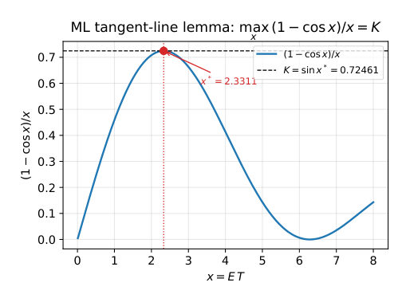
<figcaption class="paper-figure-caption"><b>Fig 1.</b> FIG. 1. The tangent-line lemma. (1 −cos x)/x attains its supremum K = sin x⋆= 0.724611 . . . at x⋆= 2.331122 . . . (root of tan(x/2) = x), which fixes the sharp constant C⋆= 1/(8K).</figcaption>
</figure>
<figure class="paper-figure-card">
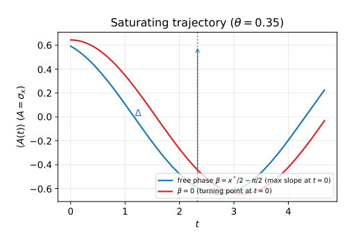
<figcaption class="paper-figure-caption"><b>Fig 2.</b> FIG. 4. Saturating trajectory ⟨A(t)⟩(A = σx). With the optimal phase the expectation starts at maximum slope (and reaches its excursion ∆at T = x⋆/E); the real-amplitude (β = 0) case starts at a turning point and is suboptimal.</figcaption>
</figure>
<figure class="paper-figure-card">
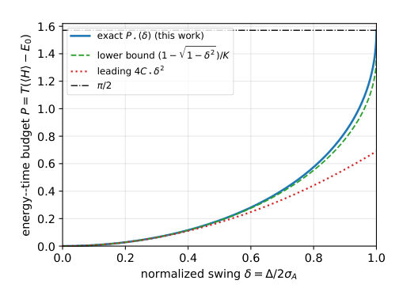
<figcaption class="paper-figure-caption"><b>Fig 3.</b> FIG. 2. The exact observable trade-off curve P⋆(δ), Eq. (6): the minimum energy–time budget P = T(⟨H⟩−E0) for a normalized swing δ = ∆/2σA, tight at every δ. Its slope as δ →0 is set by C⋆and its δ →1 limit is π/2. It lies above the elementary lower bound (1 − √</figcaption>
</figure>
<figure class="paper-figure-card">
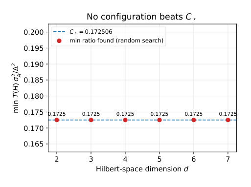
<figcaption class="paper-figure-caption"><b>Fig 4.</b> FIG. 5. Global-optimizer minimum of T⟨H⟩σ2 A/∆2 per Hilbert-space dimension d. No configuration in d = 2–7 beats C⋆; each dimension approaches it from above.</figcaption>
</figure>
<figure class="paper-figure-card">
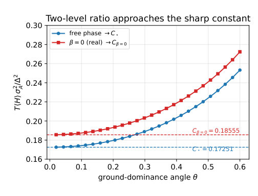
<figcaption class="paper-figure-caption"><b>Fig 5.</b> FIG. 3. The two-level ratio T⟨H⟩σ2 A/∆2 versus the ground- dominance angle θ, approaching the sharp constant C⋆(free relative phase) and the phase-restricted suboptimum Cβ=0 = 0.185551, both from above as θ →0.</figcaption>
</figure>
</div>

<p><strong>Summary.</strong> This work establishes a novel, sharp quadratic speed limit for observables, bounding the change in an expectation value ($\Delta\langle A 
angle$) by the mean energy available ($\langle H 
angle - E_0$). This result completes the mean-energy corner of the speed-limit landscape, offering a powerful, state-independent tool for analyzing quantum clocks and energy-constrained dynamics.</p>
<p><strong>Why it may be interesting.</strong> It provides a powerful, complementary thermodynamic constraint on quantum evolution, particularly useful for understanding energy resolution limits in quantum metrology and timekeeping.</p>
<details>
<summary>Detailed structure</summary>
<p><strong>Main problem.</strong> The paper aims to establish a fundamental, state-independent speed limit for the change in an observable's expectation value, $\Delta\langle A 
angle$, in a fixed quantum state.</p>
<p><strong>Main result.</strong> It derives a sharp quadratic bound, $T \langle H 
angle \geq C_\star \Delta^2 / \sigma_A^2$, which complements existing linear bounds based on energy variance.</p>
<p><strong>Method.</strong> The derivation uses techniques involving H"older's inequality and the tangent-line lemma to relate the observable change to the mean energy above the ground state.</p>
<p><strong>Model / system.</strong> The analysis considers a quantum system evolving under a time-independent Hamiltonian $H$ on a finite-dimensional Hilbert space, applicable to both pure and mixed states.</p>
<p><strong>Key observables.</strong> The change in expectation value $\Delta\langle A 
angle$, the mean energy above ground state $\langle H 
angle - E_0$, and the observable's spectral spread $\sigma_A$.</p>
<p><strong>Important parameters / regimes.</strong> The sharp constant $C_\star = 1/(8 \sin x_*)$ and the quadratic dependence on the observable change $\Delta^2$.</p>
<p><strong>Assumptions / limitations.</strong> The Hamiltonian $H$ is time-independent, and the bound is most relevant for near-ground dynamics or autonomous quantum clocks.</p>
<p><strong>Figures summary.</strong> Figures illustrate the tangent-line lemma, the exact energy-time/swing trade-off curve $P_\star(\delta)$, and comparisons between different limiting regimes.</p>
<p><strong>Paper structure.</strong> The paper first establishes a no-go theorem ruling out a linear mean-energy bound, then derives the main quadratic bound, and finally discusses its implications for quantum clocks and batteries.</p>
</details>
<details>
<summary>Abstract</summary>
<p>The Mandelstam-Tamm and Margolus-Levitin quantum speed limits bound how fast a state evolves, using the energy variance and the mean energy above the ground state. Speed limits on observables -- the change of an expectation value <A(t)> -- have so far used the variance (the Mandelstam-Tamm / quantum-Fisher-information lineage); the mean energy has not been brought to bear on the change of <A> in a fixed state. We close this branch. First, a no-go theorem: there is no state-independent linear mean-energy bound on the time to change an observable's expectation by Delta = |<A(T)> - <A(0)>|; the optimal state-independent exponent of Delta is exactly two. Second, the corresponding sharp quadratic bound, T (<H> - E_0) &gt;= C_<em> Delta^2 / sigma_A^2, for every time-independent Hamiltonian H (ground energy E_0), every bounded observable A with spectral spread sigma_A = (lambda_max - lambda_min)/2, and every pure or mixed state, with the dimension-independent constant C_</em> = 1/(8 sin x_<em>) = 0.172506267461..., where x_</em> is the smallest positive root of tan(x/2) = x. The bound is tight, approached but not attained by a near-ground two-level family. We then give the exact energy-time/swing trade-off curve of which C_* is the small-swing slope -- tight at every swing, the observable analog of the Giovannetti-Lloyd-Maccone curve for states -- show the constant survives for mixed states via joint convexity of the trace distance, sharpen it for bandwidth-limited generators and several observables at once, and show the quadratic law degrades to a linear one when the initial state is an eigenvector of the observable. It completes the (mean-energy x observable) corner of the speed-limit landscape and, being quadratic, is most constraining where the linear variance bounds are weakest. Its cleanest physical home is the autonomous quantum clock, where it gives a coherent mean-energy resolution floor.</p>
</details>
<p><sub><a href="#top">↑ back to top</a></sub></p>

<p><a id="paper-2608.22264"></a></p>
<h3 id="engineering-exact-mobility-edges-in-quasiperiodic-aharonov-bohm-chains"><a href="http://arxiv.org/abs/2608.22264v1">Engineering exact mobility edges in quasiperiodic Aharonov-Bohm chains</a></h3>
<p><strong>Authors:</strong> Hai-Ying Cui, Yi-Cong Yu, Xiaoming Cai<br>
<strong>Type:</strong> theory · <strong>Category:</strong> disordered systems and neural networks · <strong>PDF:</strong> <a href="https://arxiv.org/pdf/2608.22264v1">https://arxiv.org/pdf/2608.22264v1</a><br>
<strong>Analysis basis:</strong> full PDF text, analyzed in chunks
<strong>Topic relevance:</strong> <code>analog quantum simulation</code> <strong>2/5</strong> · <code>Frenkel-Kontorova</code> <strong>1/5</strong></p>
<div class="figure-strip-hint">↔ Scroll figures horizontally</div>
<div class="paper-figures-scroll">
<figure class="paper-figure-card">
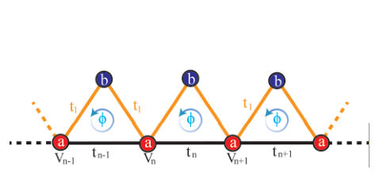
<figcaption class="paper-figure-caption"><b>Fig 1.</b> FIG. 1. Schematic illustration of the quasiperiodic AB chain.</figcaption>
</figure>
<figure class="paper-figure-card">
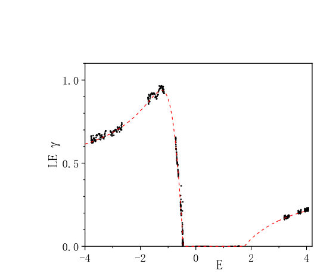
<figcaption class="paper-figure-caption"><b>Fig 2.</b> FIG. 2. LEs of all single-particle states, as a function of en- ergy, for the system with L = 610, W = 0, t1 = 1, ϕ = 0.2π, and V = 1.5. The red dashed line corresponds to Eq.(10).</figcaption>
</figure>
<figure class="paper-figure-card">
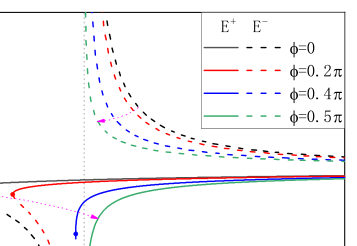
<figcaption class="paper-figure-caption"><b>Fig 3.</b> FIG. 3. (a) Eigenenergies E as functions of the quasiperiodic potential strength V for diagonal AB chains with L = 610, W = 0, t1 = 1, and ϕ = 0.2π. The fractal dimension D2 of each state is color-coded. Gray dotted and blue dash-dotted lines mark the divergence (V = t) and the coincidence (V = t sin ϕ), respectively. (b) Exact MEs on the (E, V ) plane for systems with W = 0, t1 = 1, and various ϕ. The gray dotted line marks the divergence at V = t.</figcaption>
</figure>
<figure class="paper-figure-card">
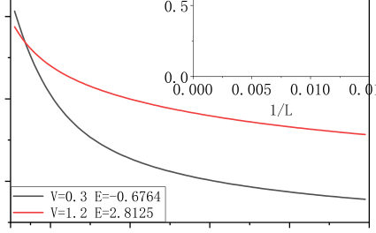
<figcaption class="paper-figure-caption"><b>Fig 4.</b> FIG. 4. (a,b) Eigenenergies E versus the quasiperiodic po- tential strength V , with D2 values of all states color-coded, for off-diagonal AB chains with L = 610, t1 = 1, and ϕ = 0. (a) W = 0.5 &lt; t. (b) W = 1.5 &gt; t. Blue and black solid lines indicate the AMEs E+ 1 and E− 1 , respectively; pink and purple dashed lines indicate the MEs E− 2 and E+ 2 . The red dashed line is V = W, and the gray dotted line signals the divergence at V = t. (c) Generalized fractal dimension Dq versus q for two critical states (indicated by dots in (b)). Inset: Their finite-size scaling of D2.</figcaption>
</figure>
<figure class="paper-figure-card">
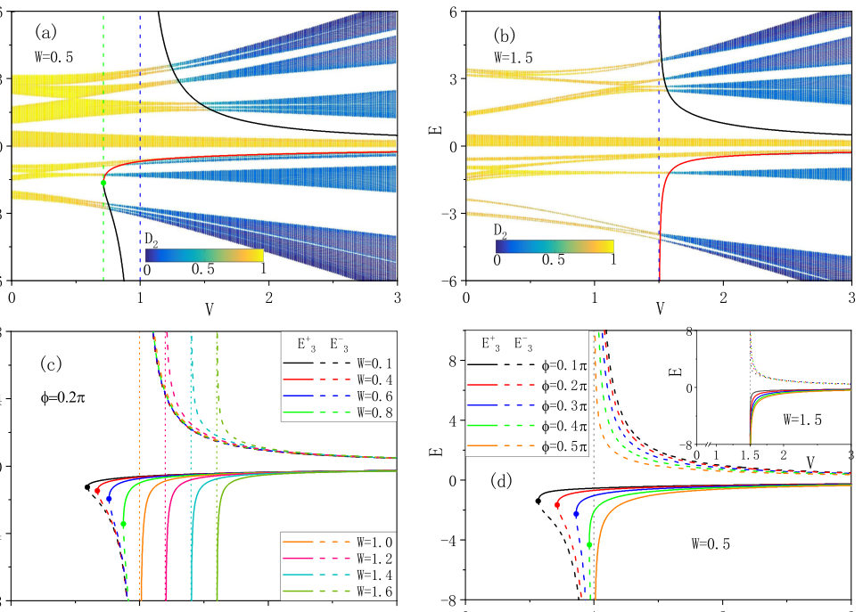
<figcaption class="paper-figure-caption"><b>Fig 5.</b> FIG. 5. Eigenenergies E as functions of V for off-diagonal AB chains with L = 610, t1 = 1, and ϕ = 0.2π. The D2 values are color-coded. (a) W = 0.5 &lt; t. (b) W = 1.5 &gt; t. Black and red solid lines correspond to the MEs E− 3 and E+ 3 , and blue and green dashed lines mark the divergence (V = t) and the coincidence (V = Vc), respectively. (c) Exact MEs on the (E, V ) plane for t1 = 1, ϕ = 0.2π, and several values of W. Colored dotted lines indicate the asymptotes V = W for the corresponding MEs. (d) Main panel and inset: Exact MEs on the (E, V ) plane for t1 = 1 and different ϕ, with W = 0.5 (main) and W = 1.5 (inset). The gray dotted line marks the divergence at V = t.</figcaption>
</figure>
</div>

<p><strong>Summary.</strong> This work develops a theoretical framework to precisely engineer mobility edges in quasiperiodic Aharonov-Bohm chains. By coupling Aubry-André-Harper models with a synthetic magnetic flux, the authors derive exact expressions for these edges. This tunability makes the model highly relevant for designing quantum devices in superconducting circuits or photonic waveguides.</p>
<p><strong>Why it may be interesting.</strong> The ability to analytically derive exact, tunable mobility edges using a synthetic flux provides a powerful theoretical tool for designing quantum transport in engineered platforms.</p>
<details>
<summary>Detailed structure</summary>
<p><strong>Main problem.</strong> The paper investigates localization phenomena and derives exact expressions for mobility edges in a quasiperiodic Aharonov-Bohm chain.</p>
<p><strong>Main result.</strong> The authors establish a rigorous framework for engineering controllable mobility edges, showing that anomalous mobility edges can emerge even without conventional disorder features.</p>
<p><strong>Method.</strong> The analysis involves analytically computing the Lyapunov exponent using Avila’s global theory of one-frequency Schrödinger operators.</p>
<p><strong>Model / system.</strong> The system is a quasiperiodic Aharonov-Bohm chain, modeled as a lateral coupling of 1D diagonal and off-diagonal Aubry-André-Harper models to an auxiliary sublattice threaded by a synthetic magnetic flux.</p>
<p><strong>Key observables.</strong> Mobility Edges (MEs) and Anomalous Mobility Edges (AMEs), and the Lyapunov Exponent ($\gamma$).</p>
<p><strong>Important parameters / regimes.</strong> Magnetic flux ($\phi$), modulation strengths ($W, V$), and the quasiperiodicity parameter ($eta$).</p>
<p><strong>Assumptions / limitations.</strong> The analysis relies on the AB geometry and the application of Avila’s global theory for exact results.</p>
<p><strong>Figures summary.</strong> Figures illustrate the schematic of the chain and show how MEs evolve as parameters like modulation strength ($W$) and flux ($\phi$) are varied.</p>
<p><strong>Paper structure.</strong> The paper progresses by defining the coupled Hamiltonian, deriving an effective eigenequation, calculating the Lyapunov exponent using advanced theory, and then analyzing the resulting MEs in both diagonal and off-diagonal limits.</p>
</details>
<details>
<summary>Abstract</summary>
<p>We investigate localization phenomena and exact mobility edges in a quasiperiodic Aharonov-Bohm chain, where the 1D canonical diagonal and off-diagonal Aubry-André-Harper models are laterally coupled to an auxiliary sublattice threaded by a synthetic magnetic flux. By analytically computing the Lyapunov exponent via Avila's global theory of one-frequency Schrödinger operators, we derive exact expressions for mobility edges. In the diagonal limit, the coupling to the auxiliary sublattice generates hyperbolic mobility edges that exhibit a sign-changing divergence and can be continuously tuned by the magnetic flux. In the off-diagonal regime, the interference between quasiperiodic hopping and indirect tunneling through the auxiliary sublattice gives rise to exact anomalous mobility edges that separate critical and extended states. Critical states and anomalous mobility edges emerge even in the absence of incommensurately distributed zeros in the hopping modulation, a behavior distinct from that of conventional off-diagonal models. Our results establish a rigorous theoretical framework for engineering controllable mobility edges, with the synthetic flux providing a tunable experimental knob that paves the way for realizations in platforms such as superconducting quantum circuits and photonic waveguides.</p>
</details>
<p><sub><a href="#top">↑ back to top</a></sub></p>

<p><a id="paper-2608.23342"></a></p>
<h3 id="instantons-in-a-double-well-are-poisson-distributed"><a href="http://arxiv.org/abs/2608.23342v1">Instantons in a Double-Well are Poisson Distributed</a></h3>
<p><strong>Authors:</strong> Jacob Shapiro<br>
<strong>Type:</strong> theory · <strong>Category:</strong> other · <strong>PDF:</strong> <a href="https://arxiv.org/pdf/2608.23342v1">https://arxiv.org/pdf/2608.23342v1</a><br>
<strong>Analysis basis:</strong> full PDF text, analyzed in chunks
<strong>Topic relevance:</strong> <code>Keldysh / 2PI / non-Gaussian methods</code> <strong>2/5</strong> · <code>analog quantum simulation</code> <strong>1/5</strong></p>
<div class="figure-strip-hint">↔ Scroll figures horizontally</div>
<div class="paper-figures-scroll">
<figure class="paper-figure-card">
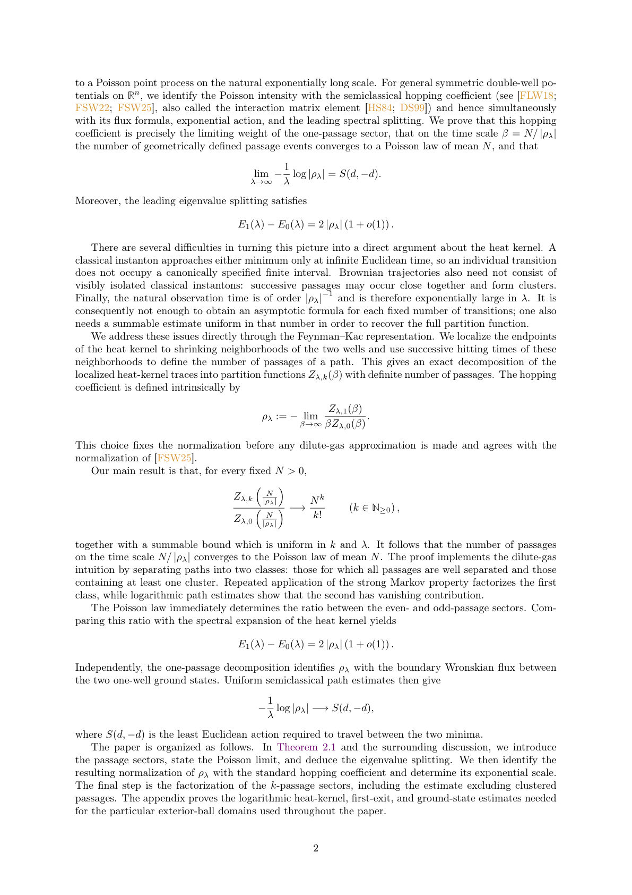
<figcaption class="paper-figure-caption"><b>Fig 1.</b> Low-resolution page preview, page 2</figcaption>
</figure>
<figure class="paper-figure-card">
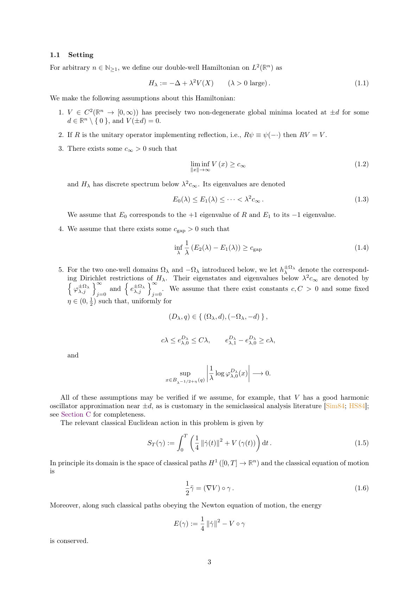
<figcaption class="paper-figure-caption"><b>Fig 2.</b> Low-resolution page preview, page 3</figcaption>
</figure>
<figure class="paper-figure-card">
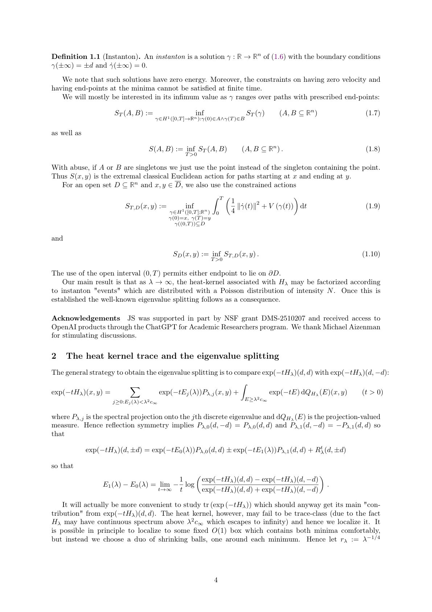
<figcaption class="paper-figure-caption"><b>Fig 3.</b> Low-resolution page preview, page 4</figcaption>
</figure>
<figure class="paper-figure-card">
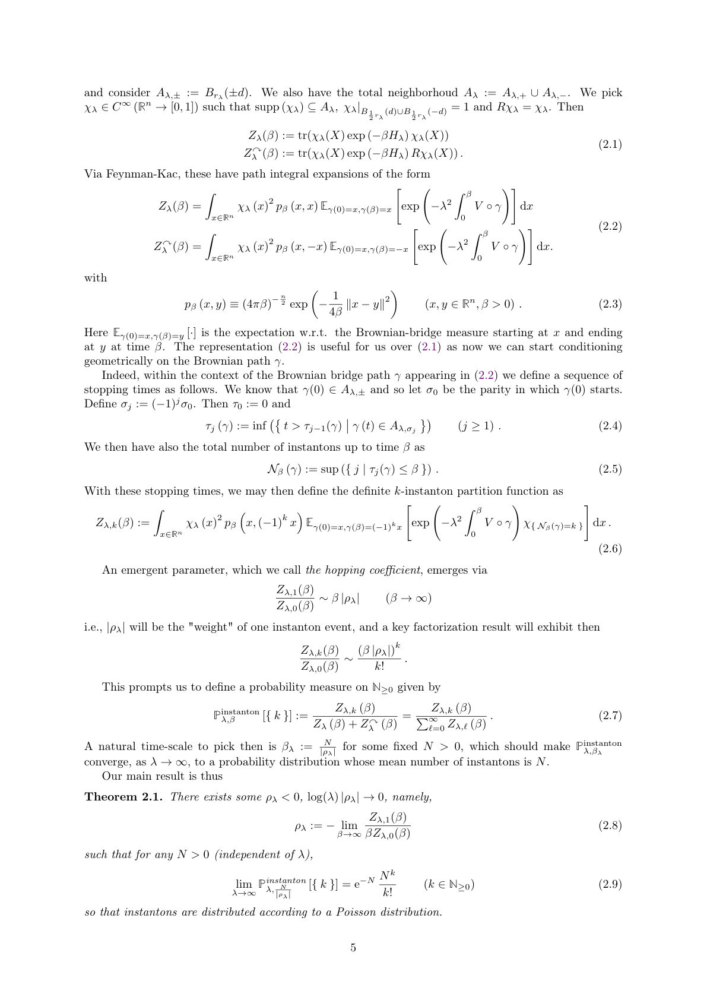
<figcaption class="paper-figure-caption"><b>Fig 4.</b> Low-resolution page preview, page 5</figcaption>
</figure>
<figure class="paper-figure-card">
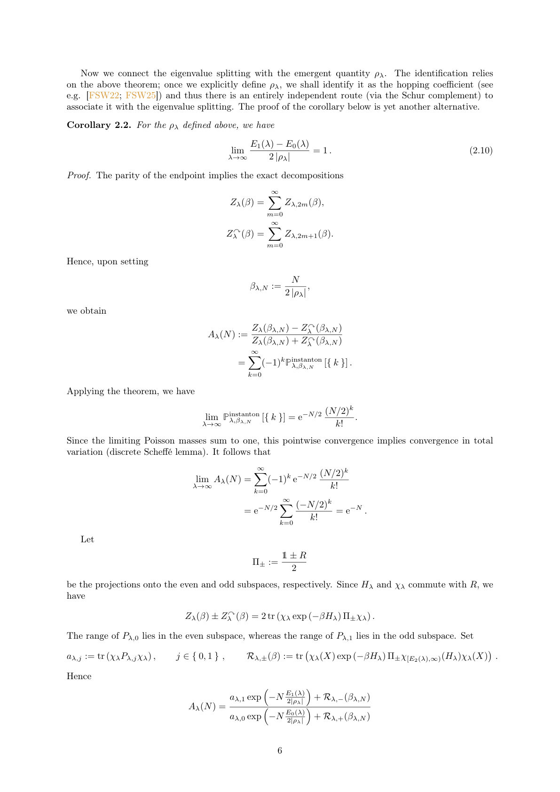
<figcaption class="paper-figure-caption"><b>Fig 5.</b> Low-resolution page preview, page 6</figcaption>
</figure>
</div>

<p><strong>Summary.</strong> This paper rigorously derives the semiclassical splitting of energy levels in a double-well potential by analyzing the heat-kernel trace. It shows that the tunneling events (instantons) follow a Poisson distribution, leading to a direct calculation of the energy splitting proportional to the hopping coefficient. This method provides a powerful, path-integral framework for understanding quantum tunneling phenomena.</p>
<p><strong>Why it may be interesting.</strong> This work provides a rigorous, path-integral approach to calculating tunneling splittings, which is fundamental to understanding quantum tunneling in many physical systems, including those modeled by double-well potentials in AMO physics.</p>
<details>
<summary>Detailed structure</summary>
<p><strong>Main problem.</strong> The paper rigorously analyzes the semiclassical splitting of a degenerate energy level in a symmetric double-well potential by studying the heat-kernel trace.</p>
<p><strong>Main result.</strong> The number of tunneling passages (instantons) converges to a Poisson distribution, and the energy splitting is shown to be proportional to the hopping coefficient, $E_1(\lambda) - E_0(\lambda) \propto |
ho_\lambda|$.</p>
<p><strong>Method.</strong> The analysis employs the Feynman-Kac representation to decompose the heat-kernel trace based on the number of passages made by a Brownian bridge, leading to a dilute-gas picture.</p>
<p><strong>Model / system.</strong> The system is governed by a Schrödinger operator $H_\lambda = -\Delta + \lambda^2 V(X)$ on $\mathbb{R}^n$, where $V(X)$ is a symmetric double-well potential with minima at $\pm d$.</p>
<p><strong>Key observables.</strong> Eigenvalue splitting ($E_1(\lambda) - E_0(\lambda)$), hopping coefficient ($
ho_\lambda$), and the Poisson distribution parameter $N$.</p>
<p><strong>Important parameters / regimes.</strong> The large parameter $\lambda$, the effective time scale $eta = N/|
ho_\lambda|$, and the action $S(d, -d)$.</p>
<p><strong>Assumptions / limitations.</strong> The potential must have exactly two non-degenerate global minima, and the analysis relies on localizing the heat kernel to shrinking neighborhoods of these wells.</p>
<p><strong>Paper structure.</strong> The paper builds from the general heat-kernel trace analysis, decomposes it using the Feynman-Kac formula based on passage counting, establishes the Poisson limit for the passage number, and finally derives the eigenvalue splitting formula.</p>
</details>
<details>
<summary>Abstract</summary>
<p>We give a rigorous realization of the dilute instanton picture for a semiclassical Schrödinger operator with a symmetric double-well potential on $\mathbb{R}^n$. Using a localized Feynman--Kac representation, we decompose the heat-kernel trace according to the number of passages made by a Brownian bridge between shrinking neighborhoods of the two wells. We identify the weight of one passage with a hopping coefficient $ρ_λ$,   $\displaystyle ρ_λ= \int_{\partialΩ} \left( \nabla\overline{\varphi_{λ,0}^Ω}\, \varphi_{λ,0}^{-Ω} - \overline{\varphi_{λ,0}^Ω}\, \nabla\varphi_{λ,0}^{-Ω} \right)\cdotν. $   On the exponentially long time scale $β=N/\lvertρ_λ\rvert$, the number of passages converges, for every fixed $N>0$, to a Poisson random variable of mean $N$. We identify $-\frac{1}λ\log\lvertρ_λ\rvert\to S(d,-d)$ and obtain   $\displaystyle E_1(λ)-E_0(λ) = 2\lvertρ_λ\rvert\left(1+o(1)\right). $   Thus the familiar instanton expansion of the double-well eigenvalue splitting emerges directly from a factorization of the heat-kernel trace.</p>
</details>
<p><sub><a href="#top">↑ back to top</a></sub></p>

<p><a id="paper-2608.21698"></a></p>
<h3 id="non-uniform-swelling-of-polyelectrolyte-hydrogels-effects-of-charge-regulation"><a href="http://arxiv.org/abs/2608.21698v1">Non-uniform swelling of polyelectrolyte hydrogels: effects of charge regulation</a></h3>
<p><strong>Authors:</strong> Du Chen, Rudolph Podgornik, David Andelman, Xianghong Wang, Linli He, Shigeyuki Komura, Bin Zheng<br>
<strong>Type:</strong> theory · <strong>Category:</strong> statistical mechanics · <strong>PDF:</strong> <a href="https://arxiv.org/pdf/2608.21698v1">https://arxiv.org/pdf/2608.21698v1</a><br>
<strong>Analysis basis:</strong> full PDF text, analyzed in chunks
<strong>Topic relevance:</strong> <code>Keldysh / 2PI / non-Gaussian methods</code> <strong>2/5</strong> · <code>analog quantum simulation</code> <strong>1/5</strong></p>
<div class="figure-strip-hint">↔ Scroll figures horizontally</div>
<div class="paper-figures-scroll">
<figure class="paper-figure-card">
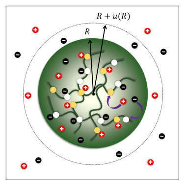
<figcaption class="paper-figure-caption"><b>Fig 1.</b> FIG. 1. Schematic drawing of the CR gel model. The green sphere represents the gel volume. In the two-site model, the polymer chains contain n-type and p-type sites that can be- come negatively (white sites can be associated with black an- ions) or positively charged (yellow sites can be associated with red cations) through an association/dissociation process. The original gel radius is R, while R + u(R) is the swollen gel ra- dius. Free cations are marked in red and anions in black.</figcaption>
</figure>
<figure class="paper-figure-card">
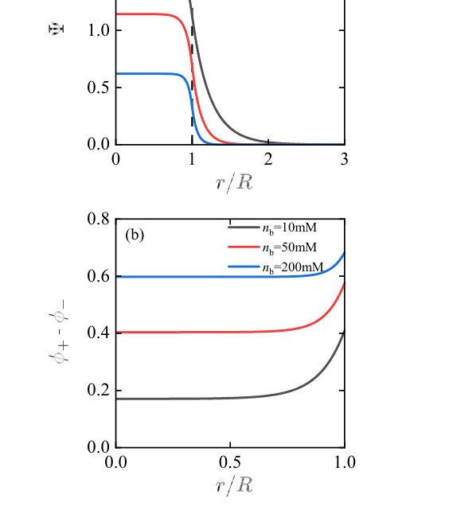
<figcaption class="paper-figure-caption"><b>Fig 2.</b> FIG. 2. (a) The rescaled electrostatic potential profile Ψ=βeψ as a function of the rescaled distance from the gel center, r/R. (b) The spatial distribution of net charge fraction ϕ+ −ϕ−, as a function of r/R. The profiles are plotted for different val- ues of salt concentration, nb = 10 mM, 50 mM, and 200 mM. The corresponding Debye lengths are about 3 nm, 1.34 nm, and 0.67 nm, respectively. Thus, the screening length remains comparable to the gel radius R = 10 nm, especially at the low- est salt concentration. The other parameters are A± = ± 2, N± = 30, R = 10 nm, and ¯cp/(βK) = 0.02.</figcaption>
</figure>
<figure class="paper-figure-card">
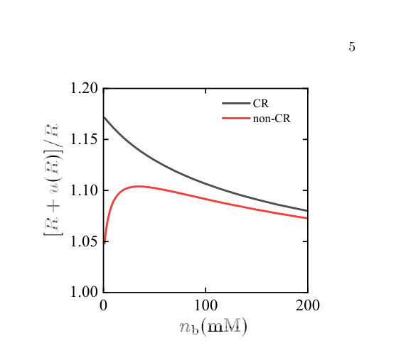
<figcaption class="paper-figure-caption"><b>Fig 3.</b> FIG. 4. Salt concentration dependence of the normalized de- formed gel radius, [R+u(R)]/R, for the CR and non-CR gels. Other parameter values are A± = ± 2, N± = 30, R = 10 nm, and ¯cp/(βK) = 0.02.</figcaption>
</figure>
<figure class="paper-figure-card">
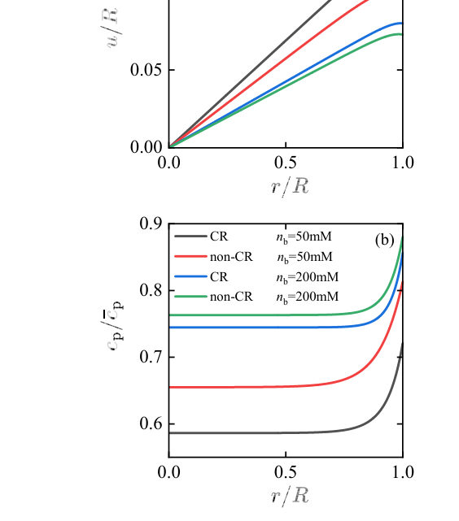
<figcaption class="paper-figure-caption"><b>Fig 4.</b> FIG. 3. (a) The spatial distribution of the elastic dis- placement u/R, and (b) the normalized gel density profile, cp(r)/¯cp, as a function of the rescaled distance r/R from the gel center. The black (nb = 50 mM) and blue (nb = 200 mM) lines correspond to the CR case with parameters A± = ± 2, and N± = 30, while the red (nb = 50 mM) and green lines (nb = 200 mM) correspond to the non-CR case. The other parameters are R = 10 nm, and ¯cp/(βK) = 0.02.</figcaption>
</figure>
</div>

<p><strong>Summary.</strong> This theoretical work models polyelectrolyte hydrogels to understand how charge regulation affects their swelling. By coupling electrostatics, elasticity, and charge state changes, the authors show that CR enhances the non-uniform swelling response compared to simpler fixed-charge models. This provides a theoretical tool for controlling responsive hydrogel materials.</p>
<p><strong>Why it may be interesting.</strong> While focused on soft matter, the coupling between local charge state (CR) and mechanical deformation (elasticity) is a complex, non-linear many-body interaction that shares conceptual parallels with phase transitions or correlated electronic states.</p>
<details>
<summary>Detailed structure</summary>
<p><strong>Main problem.</strong> The study investigates how charge regulation (CR) influences the non-uniform swelling behavior of polyelectrolyte hydrogels.</p>
<p><strong>Main result.</strong> The inclusion of CR significantly strengthens the electro-elastic response, leading to more pronounced non-uniform swelling compared to gels modeled with fixed charges.</p>
<p><strong>Method.</strong> The authors employed a theoretical framework combining Poisson-Boltzmann theory, electro-elastic coupling, and a two-site CR model to minimize the total free energy.</p>
<p><strong>Model / system.</strong> The system is a spherical polyelectrolyte gel containing ionizable p-type and n-type sites, modeled using a total free energy functional incorporating electrostatic, mixing, elastic, and CR terms.</p>
<p><strong>Key observables.</strong> Electrostatic potential (psi), elastic displacement (nabla.u), polymer density profile (cp(r)), and the spatial variation of charge fractions (phi_+-).</p>
<p><strong>Important parameters / regimes.</strong> Salt concentrations (e.g., 10, 50, 200 mM), gel radius (R=10 nm), and the ratio of gel size to Debye length.</p>
<p><strong>Assumptions / limitations.</strong> The gel is treated as an isotropic linear elastic medium, and the analysis is restricted to radially symmetric deformations, assuming small elastic deformations.</p>
<p><strong>Figures summary.</strong> Figures illustrate the two-site CR model, the responsiveness of charge fractions to potential, the polymer density profile, and the salt dependence comparison between CR and non-CR gel sizes.</p>
<p><strong>Paper structure.</strong> The paper develops the free energy functional, derives coupled differential equations for potential and displacement, and then analyzes the resulting profiles and the effect of salt concentration on swelling in both CR and non-CR regimes.</p>
</details>
<details>
<summary>Abstract</summary>
<p>We investigate the impact of charge regulation (CR) on the non-uniform swelling behavior of polyelectrolyte hydrogels. The Poisson-Boltzmann theory with electro-elastic coupling between the local polymer density and elastic deformation is considered. We investigate the spatial distributions of the elastic displacement and polymer density under different salt concentrations and compare charge-regulated gels with fixed-charge (non-CR) gels of the same net charge. Our results show that the CR induces spatially varying charge fractions, which strengthen the electro-elastic response and lead to stronger non-uniform swelling compared with non-CR gels. These findings provide a theoretical basis for understanding and controlling non-uniform swelling in responsive polyelectrolyte hydrogels.</p>
</details>
<p><sub><a href="#top">↑ back to top</a></sub></p>

<p><a id="paper-2608.23119"></a></p>
<h3 id="quantum-reservoir-computing-with-physics-informed-correction-for-reduced-order-pde-forecasting"><a href="http://arxiv.org/abs/2608.23119v1">Quantum Reservoir Computing with Physics-Informed Correction for Reduced-Order PDE Forecasting</a></h3>
<p><strong>Authors:</strong> Krishna Bhatia, Harsh, Shalini Devendrababu<br>
<strong>Type:</strong> theory · <strong>Category:</strong> disordered systems and neural networks · <strong>PDF:</strong> <a href="https://arxiv.org/pdf/2608.23119v1">https://arxiv.org/pdf/2608.23119v1</a><br>
<strong>Analysis basis:</strong> full PDF text, analyzed in chunks
<strong>Topic relevance:</strong> <code>methods for driven-dissipative</code> <strong>2/5</strong> · <code>analog quantum simulation</code> <strong>1/5</strong></p>
<div class="figure-strip-hint">↔ Scroll figures horizontally</div>
<div class="paper-figures-scroll">
<figure class="paper-figure-card">
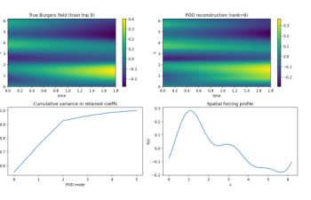
<figcaption class="paper-figure-caption"><b>Fig 1.</b> Fig. 1: Dataset overview figures</figcaption>
</figure>
<figure class="paper-figure-card">
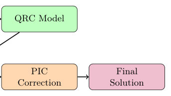
<figcaption class="paper-figure-caption"><b>Fig 2.</b> Fig. 2: Workflow of the proposed QRC+PIC framework. A quantum reservoir generates rollout predictions that are then refined by a physics-informed correc- tor.</figcaption>
</figure>
<figure class="paper-figure-card">
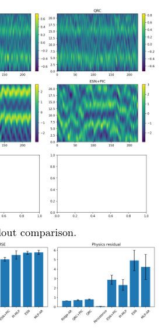
<figcaption class="paper-figure-caption"><b>Fig 3.</b> Fig. 3: Primary KS figures.</figcaption>
</figure>
<figure class="paper-figure-card">
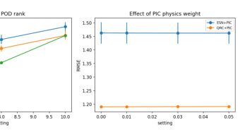
<figcaption class="paper-figure-caption"><b>Fig 4.</b> Fig. 5: KS ablation overview, including lag depth, POD rank, horizon, and physics-loss sensitivity.</figcaption>
</figure>
</div>

<p><strong>Summary.</strong> This paper proposes a novel hybrid forecasting method combining a Quantum Reservoir Computer (QRC) for initial predictions and a Physics-Informed Corrector (PIC) for refinement. Tested on chaotic PDEs like the KS equation, the QRC+PIC framework shows superior performance by enforcing physical laws during the forecasting process. It establishes a viable, physics-aware strategy for reduced-order modeling of complex physical systems.</p>
<p><strong>Why it may be interesting.</strong> While the core is ML/PDE, the integration of quantum computation (QRC) into a physics-constrained machine learning framework (PINN) for complex dynamics is relevant to modeling quantum many-body systems where classical simulation is intractable.</p>
<details>
<summary>Detailed structure</summary>
<p><strong>Main problem.</strong> The paper addresses the challenge of accurately forecasting solutions to nonlinear and chaotic Partial Differential Equations (PDEs) in a reduced-order manner.</p>
<p><strong>Main result.</strong> The proposed hybrid Quantum Reservoir Computing (QRC) and Physics-Informed Corrector (PIC) architecture consistently improves forecasting accuracy over QRC alone on the chaotic Kuramoto-Sivashinsky (KS) benchmark.</p>
<p><strong>Method.</strong> It employs a two-stage proposal-correction framework: QRC predicts latent dynamics, and a PINN-based PIC refines this proposal using physics constraints.</p>
<p><strong>Model / system.</strong> The methodology is tested on the chaotic Kuramoto-Sivashinsky (KS) equation and the viscous Burgers equation, operating on a reduced-order representation derived via Proper Orthogonal Decomposition (POD) coefficients.</p>
<p><strong>Key observables.</strong> Forecasting performance is quantified using field-level Root Mean Square Error (RMSE), Normalized RMSE (NRMSE), and the PDE residual.</p>
<p><strong>Important parameters / regimes.</strong> The primary benchmark is the KS equation, while the auxiliary benchmark is the Burgers equation. The method involves tuning hyperparameters for the QRC and the PIC loss function.</p>
<p><strong>Assumptions / limitations.</strong> The PIC is designed to be autonomous at test time, relying only on the proposal window, and the QRC used is a pure-state simulation, not hardware execution.</p>
<p><strong>Figures summary.</strong> Figures illustrate the dataset overview for KS and Burgers, the QRC+PIC workflow, and provide comparative results (RMSE, NRMSE, residual) for both benchmarks across various models.</p>
<p><strong>Paper structure.</strong> The paper introduces the problem, details the QRC+PIC hybrid architecture, evaluates it rigorously on the chaotic KS benchmark, and provides comparative analysis on the simpler Burgers benchmark, concluding with a discussion of the viability of the approach.</p>
</details>
<details>
<summary>Abstract</summary>
<p>We study a hybrid proposal--correction architecture for reduced-order PDE forecasting in which a pure-state quantum reservoir computer (QRC) predicts latent coefficient dynamics and a PINN-based physics-informed corrector (PIC) refines local rollout windows. The method is evaluated on Burgers and Kuramoto--Sivashinsky (KS), with KS as the primary chaotic benchmark. On KS, QRC+PIC consistently improves over QRC alone in RMSE, NRMSE, and PDE residual, while Burgers highlights a regime in which simple baselines remain strong. These results suggest that QRC proposals with local physics-informed correction are a viable benchmark-dependent reduced-order forecasting strategy.</p>
</details>
<p><sub><a href="#top">↑ back to top</a></sub></p>

<p><a id="paper-2608.23032"></a></p>
<h3 id="what-do-position-and-time-mean-in-the-quantum-wavefunction"><a href="http://arxiv.org/abs/2608.23032v1">What do position and time mean in the quantum wavefunction?</a></h3>
<p><strong>Authors:</strong> Mustafa Bakr, Zichi Zhang, Margot Stakenborg<br>
<strong>Type:</strong> theory · <strong>Category:</strong> other · <strong>PDF:</strong> <a href="https://arxiv.org/pdf/2608.23032v1">https://arxiv.org/pdf/2608.23032v1</a><br>
<strong>Analysis basis:</strong> full PDF text, analyzed in chunks
<strong>Topic relevance:</strong> <code>quantum measurements</code> <strong>2/5</strong> · <code>analog quantum simulation</code> <strong>1/5</strong></p>
<div class="figure-strip-hint">↔ Scroll figures horizontally</div>
<div class="paper-figures-scroll">
<figure class="paper-figure-card">

<figcaption class="paper-figure-caption"><b>Fig 1.</b> FIG. 1. The two maps hidden in ψ(x, t). Time evolution selects a member |ψt⟩of a family of abstract states. Only afterward does a representation map WX turn that state into a function of the spectral coordinate x. The same notation ψ(x, t) compresses both operations.</figcaption>
</figure>
<figure class="paper-figure-card">

<figcaption class="paper-figure-caption"><b>Fig 2.</b> FIG. 2. A dimensional route from field theory back to quan- tum mechanics. In the standard notation, “0+1 dimensional” means zero spatial dimensions plus one time dimension. A genuinely zero-dimensional field theory, with no time coordi- nate either, is instead an ordinary finite-dimensional integral or matrix-model-type object, not quantum mechanics.</figcaption>
</figure>
<figure class="paper-figure-card">

<figcaption class="paper-figure-caption"><b>Fig 3.</b> FIG. 3. A two-level control example that separates the roles without any continuous-spectrum subtleties. (a) Schr¨odinger time labels the position of the abstract state along its unitary orbit. (b) Once an observable is selected, its spectrum supplies the possible measurement labels. The laboratory chooses t0. The apparatus returns a random spectral outcome.</figcaption>
</figure>
<figure class="paper-figure-card">

<figcaption class="paper-figure-caption"><b>Fig 4.</b> FIG. 4. Two experiments that use the word “time” differently. In protocol A, t0 is externally prescribed and position is the random outcome. In protocol B, the detector location is pre- scribed and the registered event time is the random outcome. The density |ψ(x, t)|2 directly answers the first question, not in general the second.</figcaption>
</figure>
<figure class="paper-figure-card">

<figcaption class="paper-figure-caption"><b>Fig 5.</b> FIG. 5. An assumption map for Pauli’s argument. The ob- struction is not a blanket prohibition on every object called a time observable. It follows from demanding a strong global canonical relation together with a semibounded Hamiltonian.</figcaption>
</figure>
</div>

<p><strong>Summary.</strong> This paper tackles the deep conceptual confusion surrounding the notation $\psi(x, t)$ by providing a rigorous, pedagogical framework. It clarifies that the wavefunction arises from two distinct mathematical steps: time evolution selecting a state, and a spectral map representing that state as a function of an observable. The goal is not to solve the physical problem of time, but to clarify the mathematical roles of the labels $x$ and $t$.</p>
<p><strong>Why it may be interesting.</strong> This paper is highly relevant as it provides a rigorous conceptual toolkit for understanding the mathematical structure underlying time and space in quantum theory, which is crucial for developing consistent theories in quantum gravity or advanced open quantum systems.</p>
<details>
<summary>Detailed structure</summary>
<p><strong>Main problem.</strong> The paper addresses the fundamental notational ambiguity in quantum mechanics regarding the mathematical status of position ($x$) and time ($t$) when they appear as arguments of the wavefunction $\psi(x, t)$. It seeks to provide a unified pedagogical framework to separate mathematical roles from notational conventions.</p>
<p><strong>Main result.</strong> The apparent asymmetry between $x$ and $t$ depends on whether they are treated as external evolution parameters, dynamical observables, or spectral labels. The notation $\psi(x, t)$ should be understood as a composition of time evolution followed by a spectral representation map.</p>
<p><strong>Method.</strong> The authors use a combination of pedagogical exposition, rigorous mathematical tools like the spectral theorem, and conceptual comparisons (e.g., Stone's theorem analogy) to dissect the roles of different labels.</p>
<p><strong>Model / system.</strong> The analysis is general, applying to any quantum system described by a state in a Hilbert space $\mathcal{H}$. Specific examples used to illustrate the concepts include spin-1/2 systems in magnetic fields, circuit-QED, and optical-clock measurements.</p>
<p><strong>Key observables.</strong> Position ($x$), Time ($t$), Hamiltonian ($H$), Spectral outcomes ($\pm 1$ in spin example), and the wavefunction $\psi(x, t)$.</p>
<p><strong>Important parameters / regimes.</strong> Planck's constant ($\hbar$), time evolution parameter ($t$), and spatial coordinates ($x$).</p>
<p><strong>Assumptions / limitations.</strong> The paper distinguishes between background coordinates (parameters) and dynamical observables (operators), and notes that the strong form of Pauli's argument excludes only global canonical time operators.</p>
<p><strong>Figures summary.</strong> The notes mention a taxonomy (Table I) separating roles like background coordinates from observables, and a diagram (Figure 2) showing a dimensional reduction route from field theory to quantum mechanics.</p>
<p><strong>Paper structure.</strong> The paper is structured pedagogically, first tackling the notation $\psi(x, t)$, then developing a unified framework using spectral representations, distinguishing various coordinate roles, and finally discussing advanced topics like the problem of time and measurement protocols.</p>
</details>
<details>
<summary>Abstract</summary>
<p>The notation $ψ(x,t)$ is among the first pieces of quantum mechanics that students learn. It is also among the easiest to over-interpret. Because $x$ and $t$ occur as arguments of the same function, students may ask whether they have the same mathematical status. They may also ask whether $ψ(t)$ should require a generalized bra $\bra{t}$ in the same way that $ψ(x)=\braket{x}ψ$ is often written. A related question is whether the absence of a universal time operator follows simply from Pauli's argument. These questions mix several structures that are usually introduced in different parts of the curriculum. We present a unified pedagogical treatment built around two maps hidden in $ψ(x,t)$. Time evolution selects a state along a trajectory in Hilbert space. A spectral representation then maps that state to amplitudes labelled by outcomes of a chosen observable. We formulate the position representation without generalized eigenkets. We recover Dirac's $\ket{x}$ notation as a controlled continuum shorthand and use a finite-grid limit to show where delta normalization enters. We distinguish background coordinates, translation parameters, observables, spectral labels, and physical records. We also clarify the Stone-theorem analogy, compare prescribed-time position measurements with arrival-time measurements, state what the strong form of Pauli's argument excludes, and exhibit an exactly solvable boundary case in which a canonical self-adjoint time observable exists. Spin, circuit-QED, and optical-clock examples provide experimentally grounded checks. The aim is not a new interpretation of time. It is a reusable teaching framework for separating mathematical role from notation.</p>
</details>
<p><sub><a href="#top">↑ back to top</a></sub></p>

<p><a id="paper-2608.23285"></a></p>
<h3 id="efficient-computation-of-qkd-key-rates-without-semidefinite-programming"><a href="http://arxiv.org/abs/2608.23285v1">Efficient Computation of QKD Key Rates without Semidefinite Programming</a></h3>
<p><strong>Authors:</strong> Bence Temesi, Antoine Gansel, Gereon Koßmann, Rene Schwonnek<br>
<strong>Type:</strong> both · <strong>Category:</strong> quantum information and computing · <strong>PDF:</strong> <a href="https://arxiv.org/pdf/2608.23285v1">https://arxiv.org/pdf/2608.23285v1</a><br>
<strong>Analysis basis:</strong> full PDF text, analyzed in chunks
<strong>Topic relevance:</strong> <code>quantum measurements</code> <strong>2/5</strong></p>
<div class="figure-strip-hint">↔ Scroll figures horizontally</div>
<div class="paper-figures-scroll">
<figure class="paper-figure-card">

<figcaption class="paper-figure-caption"><b>Fig 1.</b> Figure 1: (a) Runtime of our algorithm on a laptop and on a raspberry 3 in comparison to existing methods that run on workstations41. Benchmark for QPSK-DMCV- QKD based on example data from41. Details in Sec.2.2. (b) Basic setting of an entanglement based Alice-Bob- Eve protocol in stylised boxes and as circuit diagram. The uncertainty H(X|E) equals the entropy production ∆H of the measurement process X0E →XE. When dilated29 to a unitary UAX, the key map Φ : A →A′</figcaption>
</figure>
<figure class="paper-figure-card">

<figcaption class="paper-figure-caption"><b>Fig 2.</b> Figure 2: Flow diagram of the candidate-and-certificate algorithm. Phase 1 generates with an iterative optimiza- tion over adopted Gibbs states a candidate state, which is in Phase 2 converted into a lower bound. The core computation effort is the loop for a newton method.</figcaption>
</figure>
<figure class="paper-figure-card">

<figcaption class="paper-figure-caption"><b>Fig 3.</b> Figure 3: A runtime comparison for the MUB protocol and the overlap protocol from37 as a function of the lo- cal dimension dA = dB is shown. We compare the com- putation of the extractable randomness from (3) in37, which uses the Gauß-Radau approximation of the rel- ative entropy53, the entropy cone methods41 and our method. The underlying devices are a laptop and the other hardware described in Fig. 1(a). All protocols de- liver at least precision 10−6 to the optimizer. Due to the logarithmic scaling, we observe that our new technique provides an improvement of several orders of magnitude.</figcaption>
</figure>
<figure class="paper-figure-card">

<figcaption class="paper-figure-caption"><b>Fig 4.</b> Figure 4: A discrete modulation CVQKD protocol43</figcaption>
</figure>
</div>

<p><strong>Summary.</strong> This paper presents a fast, resource-efficient algorithm to calculate the secure key rate for QKD by avoiding computationally prohibitive Semidefinite Programming. The method uses an iterative candidate-and-certificate approach, which only requires eigenvalue computations. This breakthrough enables the direct integration of rigorous security analysis into low-power, embedded QKD hardware.</p>
<p><strong>Why it may be interesting.</strong> The focus on computational efficiency for security analysis is crucial for practical quantum technologies, allowing complex theoretical bounds to be implemented directly on field hardware.</p>
<details>
<summary>Detailed structure</summary>
<p><strong>Main problem.</strong> The core problem is developing a computationally efficient method to estimate the secure key rate in Quantum Key Distribution (QKD) by calculating the minimal conditional entropy.</p>
<p><strong>Main result.</strong> The authors propose a novel algorithm that avoids resource-intensive Semidefinite Programming (SDP), achieving memory scaling of $d^2$ and demonstrating real-time performance on embedded hardware.</p>
<p><strong>Method.</strong> The method uses a candidate-and-certificate approach, iteratively finding a candidate state via Gibbs state calculations and then deriving a rigorous lower bound (certificate) using supporting planes.</p>
<p><strong>Model / system.</strong> The system is based on QKD protocols modeled using density operators ($
ho$) and constrained by observed measurement statistics ($m_i$). The goal is to minimize the conditional entropy $F^* = \inf_{\psi_{ABE}} H(X|E)$.</p>
<p><strong>Key observables.</strong> Minimal conditional entropy ($F^*$), candidate key rate ($F_{cand}$), and the rigorous lower bound certificate ($F_{cert}$).</p>
<p><strong>Important parameters / regimes.</strong> Hilbert-space dimension ($d$), number of constraints ($n$), and the achievable key rate as a function of distance (e.g., for CVQKD).</p>
<p><strong>Assumptions / limitations.</strong> The method assumes the feasibility of using eigenvalue computations and iterative convex optimization, and it provides a rigorous bound $    ext{cert} \le F^* \le   ext{cand}$.</p>
<p><strong>Figures summary.</strong> Figures illustrate runtime comparisons showing massive speedups on embedded hardware, the geometric process of the candidate-and-certificate method, and key rate scaling versus distance for a specific QKD protocol.</p>
<p><strong>Paper structure.</strong> The paper introduces the problem, contrasts it with existing SDP-based methods, details the two-phase candidate-and-certificate algorithm (Gibbs state iteration followed by supporting plane certification), and validates the approach with hardware benchmarks and specific QKD tests.</p>
</details>
<details>
<summary>Abstract</summary>
<p>Translating observed data into a reliable estimate of the secure key rate is a crucial step for operating a quantum key distribution device. We provide a computational method for this task that only requires eigenvalue computations and is therefore both fast and resource efficient. In contrast, existing approaches rely on semidefinite programming or programming on the entropy cone, whose memory requirements can scale as $d^4$ in the underlying Hilbert-space dimension. Our method reduces this requirement to $d^2$. A minimal implementation of our algorithm takes fewer than 100 lines of Common Lisp. We demonstrate real-time key-rate estimation on a Raspberry Pi with a 1 GB memory and a Cortex-A53 processor. Despite these modest resources, our implementation outperforms existing workstation-based benchmarks by several orders of magnitude. Non-numerical verification can be incorporated with little overhead using rational approximations. These results open the way toward embedding complete numerical security analysis directly into qkd hardware.</p>
</details>
<p><sub><a href="#top">↑ back to top</a></sub></p>

<p><a id="paper-2608.22001"></a></p>
<h3 id="finite-resolution-limits-on-quantum-uniqueness"><a href="http://arxiv.org/abs/2608.22001v1">Finite-Resolution Limits on Quantum Uniqueness</a></h3>
<p><strong>Authors:</strong> Seramika Ariwahjoedi, Sameer Ahmad Mir, Mir Faizal<br>
<strong>Type:</strong> theory · <strong>Category:</strong> other · <strong>PDF:</strong> <a href="https://arxiv.org/pdf/2608.22001v1">https://arxiv.org/pdf/2608.22001v1</a><br>
<strong>Analysis basis:</strong> full PDF text, analyzed in chunks
<strong>Topic relevance:</strong> <code>quantum measurements</code> <strong>2/5</strong></p>
<div class="figure-strip-hint">↔ Scroll figures horizontally</div>
<div class="paper-figures-scroll">
<figure class="paper-figure-card">

<figcaption class="paper-figure-caption"><b>Fig 1.</b> FIG. 1. Finite-resolution access to Weyl translations (schematic). (a) Finite control precision restricts experimen- tal access to a discrete family of displacement parameters {ξk} ⊂R2 with ξ = (q, p), each realized only within a tol- erance δξ (disks). (b) Finite statistics determine only noisy estimates of an operational quantity, e.g. f(ξ) = ⟨ψ|W(ξ)|ψ⟩, at sampled settings; a regular (strongly continuous) and a non-regular realization can agree on all sampled points within error bars, so strong continuity is not operationally decidable from finite data.</figcaption>
</figure>
</div>

<p><strong>Summary.</strong> This theoretical paper addresses the foundational question of whether finite experimental measurements of Weyl-displacement data can uniquely determine the structure of quantum theory. The authors prove that finite data is insufficient to enforce the strong continuity required for the Stone-von Neumann theorem, demonstrating that non-regular 'polymer' quantizations are indistinguishable from standard quantum mechanics using only finite measurements. This implies that selecting the correct quantum representation requires additional physical input, such as knowledge of the system's dynamics.</p>
<p><strong>Why it may be interesting.</strong> This work is highly relevant to foundational quantum physics, particularly quantum gravity, as it sets precise operational boundaries on what can be deduced about the underlying mathematical structure of quantum theory from finite measurements.</p>
<details>
<summary>Detailed structure</summary>
<p><strong>Main problem.</strong> The paper investigates whether the strong continuity assumption required by the Stone-von Neumann theorem for canonical quantization uniqueness can be certified using only finite experimental data.</p>
<p><strong>Main result.</strong> Finite agreement with Schrödinger quantum mechanics (i.e., finite Weyl data) is insufficient to certify the regularity hypothesis, as non-regular polymer states can reproduce the expectation values of regular states to arbitrary accuracy.</p>
<p><strong>Method.</strong> The authors use C*algebraic tools, comparing the expectation values derived from a standard regular Weyl representation against those from a canonical non-regular polymer representation using finite protocol algebras.</p>
<p><strong>Model / system.</strong> The system is the canonical quantization of a single degree of freedom, modeled using Weyl operators implementing phase-space translations, comparing the standard regular representation with the non-regular polymer representation.</p>
<p><strong>Key observables.</strong> Expectation values of bounded protocol observables (e.g., contractions $A_j$) measured over a finite set of Weyl displacements.</p>
<p><strong>Important parameters / regimes.</strong> The finite set of displacement labels $S$ and the associated finite protocol algebra $C_S$.</p>
<p><strong>Assumptions / limitations.</strong> The analysis is limited to finite-resolution interrogation of the Weyl relations, which only constrains the discrete protocol algebra $C_S$.</p>
<p><strong>Figures summary.</strong> Figure 1 schematically illustrates that finite control precision restricts access to a discrete set of parameters, allowing regular and non-regular realizations to agree on sampled points within error bars.</p>
<p><strong>Paper structure.</strong> The paper establishes the mathematical framework of the Weyl algebra and the Stone-von Neumann theorem, then constructs the polymer representation as a counterexample. It proceeds by showing that the operational compatibility condition derived from finite data is satisfied by both regular and non-regular models.</p>
</details>
<details>
<summary>Abstract</summary>
<p>The Stone-von Neumann theorem makes canonical quantization unique only after one imposes strong continuity of the Weyl translation groups. We show that this continuity assumption cannot be certified by any finite-resolution interrogation of the Weyl relations. A finite protocol probes only finitely many phase-space displacements and bounded expectation values, thereby determining a protocol algebra \(C_S\) generated by a finitely generated subgroup of Weyl translations, but not the regularity of an extension to the full Weyl algebra. Using the polymer representation as a canonical non-regular representation, we prove that for every regular Weyl representation, every normal state, and every finite family of bounded protocol observables, a polymer state reproduces the same expectation values to arbitrary prescribed accuracy. Thus finite agreement with Schrödinger quantum mechanics does not operationally certify the regularity hypothesis entering uniqueness. The result does not assert physical equivalence between regular and polymer quantizations, it identifies where additional input, such as Hamiltonian dynamics, energy regularity, semiclassicality, or a continuum limit, is required to distinguish or select representations. In this precise sense, non-regular polymer kinematics are not excluded by finite Weyl data alone, a point of direct relevance to quantum-gravity motivated quantizations.</p>
</details>
<p><sub><a href="#top">↑ back to top</a></sub></p>

<p><a id="paper-2608.22902"></a></p>
<h3 id="revised-symmetry-rule-and-intrinsically-time-reversal-symmetry-breaking-pairing-in-multi-orbital-superconductors"><a href="http://arxiv.org/abs/2608.22902v1">Revised symmetry rule and intrinsically time-reversal symmetry breaking pairing in multi-orbital superconductors</a></h3>
<p><strong>Authors:</strong> Chang-Youn Moon<br>
<strong>Type:</strong> theory · <strong>Category:</strong> strongly correlated electrons · <strong>PDF:</strong> <a href="https://arxiv.org/pdf/2608.22902v1">https://arxiv.org/pdf/2608.22902v1</a><br>
<strong>Analysis basis:</strong> full PDF text, analyzed in chunks
<strong>Topic relevance:</strong> <code>Keldysh / 2PI / non-Gaussian methods</code> <strong>2/5</strong></p>
<div class="figure-strip-hint">↔ Scroll figures horizontally</div>
<div class="paper-figures-scroll">
<figure class="paper-figure-card">

<figcaption class="paper-figure-caption"><b>Fig 1.</b> FIG. 1: Examples of our numerical solutions for the SC gap function ∆αβ(k, iν) on the kz = 0</figcaption>
</figure>
<figure class="paper-figure-card">

<figcaption class="paper-figure-caption"><b>Fig 2.</b> FIG. 2: (a) A schematic showing the inequivalence of the electron pair propagation between</figcaption>
</figure>
</div>

<p><strong>Summary.</strong> This theoretical work re-evaluates the symmetry rules for superconducting pairing in multi-orbital materials like $    ext{Sr}_2   ext{RuO}_4$. By solving the Eliashberg equation, the authors find that common symmetry assumptions are incorrect, leading to the prediction of unique, intrinsically time-reversal symmetry breaking pairing states. This opens new avenues for understanding exotic superconductivity driven by strong electronic correlations.</p>
<p><strong>Why it may be interesting.</strong> The rigorous re-examination of symmetry constraints in pairing mechanisms provides a deeper theoretical understanding of exotic superconductivity, which is crucial for modeling strongly correlated materials where simple symmetries break down.</p>
<details>
<summary>Detailed structure</summary>
<p><strong>Main problem.</strong> The paper investigates the fundamental symmetry rules governing superconducting (SC) pairing states in multi-orbital superconductors, challenging common assumptions about how the gap function transforms under orbital or time-reversal exchange.</p>
<p><strong>Main result.</strong> The analysis reveals a revised symmetry rule showing that the pairing interaction is not invariant under $\hat{O}$ or $\hat{T}$ exchange, leading to the prediction of intrinsically Time-Reversal Symmetry (TRS) breaking pairing states characterized by complex eigenvalues.</p>
<p><strong>Method.</strong> The study involves solving the linearized Eliashberg equation using a first-principles approach combining Density-Functional Theory with Dynamical Mean-Field Theory (DFT+DMFT).</p>
<p><strong>Model / system.</strong> The system under study is multi-orbital superconductors, exemplified by $   ext{Sr}_2   ext{RuO}_4$. The theoretical framework uses the linearized Eliashberg equation to determine the SC gap function $\Delta$ and its associated eigenvalue $\lambda$.</p>
<p><strong>Key observables.</strong> The SC order parameter ($\Delta$), the eigenvalue ($\lambda$), and the symmetry transformation properties of $\Delta$ under $\hat{O}$ and $\hat{T}$.</p>
<p><strong>Important parameters / regimes.</strong> Hund's coupling ($J$), intra-orbital Coulomb repulsion ($U$), and temperature ($174 	ext{ K}$).</p>
<p><strong>Assumptions / limitations.</strong> The standard symmetry classification ($\hat{O}\Delta = \pm\Delta$ and $\hat{T}\Delta = \pm\Delta$) is questioned, and the analysis neglects spin effects.</p>
<p><strong>Figures summary.</strong> Figures illustrate different symmetry categories for gap solutions (Fig. 1) and schematically show the non-equivalence of electron pair propagation under $\hat{T}$ and $\hat{O}$ exchange (Fig. 2).</p>
<p><strong>Paper structure.</strong> The paper progresses by first establishing the symmetry problem using the linearized Eliashberg equation, demonstrating the failure of simple symmetry assumptions, and finally deriving the conditions for exotic, TRS-breaking pairing states associated with complex eigenvalues.</p>
</details>
<details>
<summary>Abstract</summary>
<p>We investigate the basic symmetry rule for the particle permutation in superconducting (SC) pairing states by examining the numerical solution of the linearized Eliashberg equation for Sr$_2$RuO$_4$. We find that the general multi-band, frequency-dependent SC gap function does not simply transform to itself up to the minus sign with either orbital ($\hat{O}$) or frequency ($\hat{T}$) exchange between two pairing electrons, contradicting the common assumption which has been used without verification. It originates from the fact that paring interactions are not invariant under the $\hat{O}$ or $\hat{T}$ operation, and is demonstrated to be essential to correctly interpret and understand multi-band SC states. One of unique properties implied by our newly found symmetry rule is the possibility of the complex eigenvalue in the linearized gap equation where the corresponding gap functions $Δ$ always have real and imaginary components both non-zero in real frequencies, inherently breaking the time-reversal symmetry. Our numerical results suggest the possibility of this unique pairing in a real material, Sr$_2$RuO$_4$, for which the Hundness of the material is found to play a key role. The revised symmetry rule not only leads us to more comprehensive understanding of the known SC states, but also opens new possibilities into exotic and unique states.</p>
</details>
<p><sub><a href="#top">↑ back to top</a></sub></p>

<p><a id="paper-2608.22470"></a></p>
<h3 id="sample-query-interconversion-of-block-encoding-of-unknown-quantum-states"><a href="http://arxiv.org/abs/2608.22470v1">Sample-Query Interconversion of Block Encoding of Unknown Quantum States</a></h3>
<p><strong>Authors:</strong> Manaki Arihara, Mio Murao<br>
<strong>Type:</strong> theory · <strong>Category:</strong> quantum information and computing · <strong>PDF:</strong> <a href="https://arxiv.org/pdf/2608.22470v1">https://arxiv.org/pdf/2608.22470v1</a><br>
<strong>Analysis basis:</strong> full PDF text, analyzed in chunks
<strong>Topic relevance:</strong> <code>quantum measurements</code> <strong>2/5</strong></p>
<div class="figure-strip-hint">↔ Scroll figures horizontally</div>
<div class="paper-figures-scroll">
<figure class="paper-figure-card">

<figcaption class="paper-figure-caption"><b>Fig 1.</b> Figure 1. Summary of the results. (a) Sample-to-query con- version: implementing ε-approximate block-encoding unitary channels Uρ and U† ρ given sample access to an unknown quan- tum state ρ. We show that Ω(1/ε) copies of ρ are required for this task (Theorem 3). (b) Query-to-sample conversion: recovering an unknown quantum state ρ given query access to its block-encoding unitary channels Uρ and U† ρ. We show</figcaption>
</figure>
<figure class="paper-figure-card">

<figcaption class="paper-figure-caption"><b>Fig 2.</b> Figure 2. The quantum circuit representing the most general strategy for Task 2. The first wire represents an environment system E, the second wire represents an auxiliary system A and the third wire represents the target system on which the recovered state ˆρ is output.</figcaption>
</figure>
</div>

<p><strong>Summary.</strong> This paper rigorously analyzes the fundamental limitations in converting between an unknown quantum state and its block-encoding unitary representation. It proves that the required resources differ significantly depending on the direction of conversion, establishing a clear computational separation. This has implications for quantum learning algorithms that rely on encoding states into unitary channels.</p>
<p><strong>Why it may be interesting.</strong> This work provides fundamental resource characterizations for quantum information tasks, showing that simply having access to a unitary representation (the block encoding) does not equate to the ability to efficiently reconstruct the underlying state, which is crucial for understanding quantum machine learning protocols.</p>
<details>
<summary>Detailed structure</summary>
<p><strong>Main problem.</strong> The paper investigates the fundamental limits and convertibility between unknown quantum states ($
ho$) and their block-encoding unitary channels ($U_
ho$) in both directions (sample access $\leftrightarrow$ query access).</p>
<p><strong>Main result.</strong> There is a computational separation between learning the state and generating it; specifically, state recovery requires a query complexity dependent on the state's dimension and maximum eigenvalue, while sample-to-query conversion requires a cost scaling with the inverse of the approximation error.</p>
<p><strong>Method.</strong> The authors employ lower bound techniques, reducing the problem to quantum state discrimination and quantum search problems, and analyzing the required number of copies or queries needed to achieve a target fidelity.</p>
<p><strong>Model / system.</strong> The model involves unknown quantum states $
ho$ on a $d$-dimensional Hilbert space, which are characterized by their block-encoding unitary channels $U_
ho$. The analysis uses concepts from quantum singular value transformation (QSVT) and quantum query complexity.</p>
<p><strong>Key observables.</strong> Approximation error ($\epsilon$), maximum eigenvalue ($\lambda_{\max}(
ho)$), state rank ($r$), and the required number of copies or queries.</p>
<p><strong>Important parameters / regimes.</strong> The complexity scales involve $\Omega(1/\epsilon)$ for sample-to-query, and $\Omega\left((1/\lambda_{\max}(
ho))^{d/r}
ight)$ for query-to-sample.</p>
<p><strong>Assumptions / limitations.</strong> The analysis establishes lower bounds by relating the problem to quantum search/discrimination tasks, and the results highlight inherent limitations of the block encoding representation.</p>
<p><strong>Figures summary.</strong> Figure 1 summarizes the two main conversion bounds: $\Omega(1/\epsilon)$ for sample-to-query and $\Omega\left((1/\lambda_{\max}(
ho))^{d/r}
ight)$ for query-to-sample. Figure 2 and 3 illustrate the quantum circuits used for the state recovery task.</p>
<p><strong>Paper structure.</strong> The paper first analyzes the sample-to-query conversion, establishing a lower bound of $\Omega(1/\epsilon)$ copies. It then focuses on the query-to-sample conversion, deriving a lower bound dependent on $\lambda_{\max}(
ho)$ and the dimension $d$. Finally, it applies these techniques to state discrimination, confirming the separation between the two processes.</p>
</details>
<details>
<summary>Abstract</summary>
<p>Block encoding embeds a matrix as a sub-block of a unitary matrix and serves as a fundamental input model for quantum algorithms based on quantum singular value transformation, enabling polynomial transformations of matrices encoded in unitary operators. Block encoding of unknown quantum states can be useful for quantum learning; however, the fundamental limits on converting between unknown quantum states and their block-encoding unitary channels remain poorly understood. In this paper, we investigate this convertibility in both directions. First, we prove that implementing an $\varepsilon$-approximate block-encoding unitary channel of an unknown quantum state requires $Ω(1/\varepsilon)$ copies of the state, matching known upper bounds up to logarithmic factors. Second, we show that recovering a rank-$r$, $d$-dimensional quantum state $ρ$ given query access to its block-encoding unitary channel generally requires $Ω((1/λ_{\max}(ρ))\sqrt{d/r})$ queries, where $λ_{\max}(ρ)$ is the maximum eigenvalue of $ρ$, revealing an unavoidable dependence on the dimension of the state. Our results identify inherent limitations of block encoding as a representation of unknown quantum states and reveal a separation between learning properties of a quantum state and generating the state itself. Using our techniques, we further establish lower bounds for specific state-generation tasks, including ground-state preparation and Gibbs-state preparation.</p>
</details>
<p><sub><a href="#top">↑ back to top</a></sub></p>

<p><a id="paper-2608.23159"></a></p>
<h3 id="taming-spacetime-overhead-and-design-complexity-in-distributed-fault-tolerant-superconducting-quantum-computation"><a href="http://arxiv.org/abs/2608.23159v1">Taming Spacetime Overhead and Design Complexity in Distributed Fault-Tolerant Superconducting Quantum Computation</a></h3>
<p><strong>Authors:</strong> Qinjing Yu, Ke Liu<br>
<strong>Type:</strong> theory · <strong>Category:</strong> quantum information and computing · <strong>PDF:</strong> <a href="https://arxiv.org/pdf/2608.23159v1">https://arxiv.org/pdf/2608.23159v1</a><br>
<strong>Analysis basis:</strong> full PDF text, analyzed in chunks
<strong>Topic relevance:</strong> <code>QC/QI experiment</code> <strong>2/5</strong></p>
<div class="figure-strip-hint">↔ Scroll figures horizontally</div>
<div class="paper-figures-scroll">
<figure class="paper-figure-card">

<figcaption class="paper-figure-caption"><b>Fig 1.</b> FIG. 1. Spacetime overhead of distributed architectures for factoring 2048-bit RSA integers. A hardware-motivated noise model is considered, with physical error rate 10−3 and 10−2 for intra-chip and inter-chip operations, respectively. Left: Required number of QPUs as a function of chip capacity (qubits per QPU). The solid black line indicates the monolithic limit and effectively represents a constant total qubit count. Colored lines correspond to distributed architectures with various chip capacities, for different inter-chip operation time factors (η) and interface circuit protocols. Variations in chip size have a minimal impact on the total qubit count in the distributed architecture....</figcaption>
</figure>
<figure class="paper-figure-card">

<figcaption class="paper-figure-caption"><b>Fig 2.</b> FIG. 2. General procedure for resource estimation in the DFTQC architecture. The parameters highlighted in black are prerequisite inputs, while those highlighted in blue and yellow represent space cost and time cost, respectively.</figcaption>
</figure>
<figure class="paper-figure-card">

<figcaption class="paper-figure-caption"><b>Fig 3.</b> FIG. 3. Physical qubit layouts at the interface and the correspond- ing gate sequences for inter-chip syndrome extraction. Blue (red) plaquettes denote Z(X)-stabilizers. The dashed line marks the inter- face between neighboring chips. The numbers indicate the order of two-qubit gates in one round of syndrome extraction. Inter-chip op- erations are shown in green. (a) Layout of our proposed circuit with buffer qubits (squares), which decouple intra-chip and inter-chip op- eration speeds while preserving code distance. Lines with arrows de- note SWAP gates. (b) X-stabilizer measurement circuit with buffer qubits. The green region indicates the maximum allowed duration of the inter-chip...</figcaption>
</figure>
<figure class="paper-figure-card">

<figcaption class="paper-figure-caption"><b>Fig 4.</b> FIG. 4. Logical X error rate per round pX L as a function of the inter- chip physical error rate for various code distances under η = 3 for the latency-decoupled protocol. The bulk physical error rate is fixed at pb = 10−3. Dashed curves show fits to the ansatz of Eq. (1). Shad- ing represents hypothetical logical error rates with a Bayes factor of at most 1000 relative to the maximum-likelihood hypothesis prob- ability, assuming a binomial distribution. For ps &gt; 10pb = 10−2, the logical error rates deviate slightly from the fitting curves, but the main resource estimation results are unaffected because we focus on the case of ps = 10pb.</figcaption>
</figure>
<figure class="paper-figure-card">

<figcaption class="paper-figure-caption"><b>Fig 5.</b> FIG. 5. Inverse code rates of the standard surface code (Dimension=0) and yoked surface codes (Dimension=1, 2) for memory in the distributed architecture under varied target logical error rates. The chip size here is h = 3, w = 2, d = 31, and latency-decoupled protocol is used. The labels d, m, n, c, and g indicate the surface-code patch diameter (d), the number of CodeBlocks per CodeGroup (m), the number of used surface-code patches per CodeBlock (n), the layout of chips for each CodeLayout (c), and the layout of CodeGroups in each CodeLayout (g).</figcaption>
</figure>
</div>

<p><strong>Summary.</strong> This paper analyzes the feasibility of scaling fault-tolerant quantum computation using distributed superconducting architectures. By developing a rigorous resource estimation protocol, the authors demonstrate that inter-chip communication overhead does not lead to prohibitive resource growth. This establishes a viable, scalable pathway for building large quantum computers constrained by manufacturability.</p>
<p><strong>Why it may be interesting.</strong> While focused on superconducting hardware, the core concepts of resource scaling, overhead analysis, and architectural decoupling are highly relevant to any physical platform (like trapped ions or superconducting circuits) aiming for large-scale fault tolerance.</p>
<details>
<summary>Detailed structure</summary>
<p><strong>Main problem.</strong> The paper addresses whether the overhead introduced by distributing fault-tolerant quantum computation across multiple, physically separated quantum processing units (QPUs) is prohibitive compared to monolithic designs.</p>
<p><strong>Main result.</strong> The proposed distributed architecture shows only a modest, nearly scale-invariant resource overhead in both qubit count and execution time compared to ideal monolithic baselines.</p>
<p><strong>Method.</strong> The authors developed a hardware-grounded architectural co-design and a comprehensive resource-estimation protocol that integrates physical hardware constraints and circuit-level error-correction performance.</p>
<p><strong>Model / system.</strong> The work focuses on superconducting quantum computers utilizing surface-code-based modular processors, where computation is partitioned across multiple interconnected chips.</p>
<p><strong>Key observables.</strong> Spacetime overhead (qubit count and execution time) for factoring large integers like RSA-2048.</p>
<p><strong>Important parameters / regimes.</strong> Inter-chip latency/noise factors ($\eta$, $\gamma$), module capacity, and physical error rates ($p$).</p>
<p><strong>Assumptions / limitations.</strong> The analysis assumes nearest-neighbor connectivity and relies on specific hardware parameters for superconducting qubits.</p>
<p><strong>Figures summary.</strong> Figures illustrate the spacetime overhead comparison between monolithic and distributed architectures (Fig. 1), and detail the multi-layered procedure for resource estimation in the DFTQC architecture (Fig. 2).</p>
<p><strong>Paper structure.</strong> The paper establishes the problem of modular overhead, presents a resource estimation protocol, applies it to a demanding benchmark (RSA-2048), and demonstrates that the overhead is manageable and scale-invariant.</p>
</details>
<details>
<summary>Abstract</summary>
<p>Scaling fault-tolerant superconducting quantum computers will likely require distributed architectures built from multiple manufacturable quantum processing units. A central question is whether noisy and slow inter-chip operations impose substantial spacetime overhead or orchestration burdens compared with monolithic architectures. To answer this question, we present a hardware-grounded architectural co-design together with a comprehensive resource-estimation protocol for surface-code-based modular processors. The design confines inter-chip latency and noise to module boundaries, preventing slow, noisy links from inducing prohibitive spacetime overhead or becoming a global orchestration bottleneck. The resource-estimation protocol integrates hardware constraints and circuit-level error-correction performance into utility-scale algorithmic cost estimates, enabling a controlled assessment of different architectures. Using RSA-2048 factorization as a demanding benchmark, we estimate resources under experimentally anchored parameters and realistic superconducting hardware constraints. Compared with a large, ideal monolithic baseline, the resulting distributed architecture requires only modest additional resource overhead in both qubit count and execution time. More importantly, the overhead is nearly scale-invariant across a broad module-capacity window, decoupling chip size from global performance. This decoupling turns module capacity from a finely tuned architectural parameter into a flexible engineering degree of freedom, allowing chip sizes to be set by manufacturability and control-packaging constraints rather than architectural fine-tuning. These results establish a viable route to distributed fault-tolerant superconducting quantum computation that scales without prohibitive resource growth or heavy orchestration burden.</p>
</details>
<p><sub><a href="#top">↑ back to top</a></sub></p>

<p><a id="paper-2608.22668"></a></p>
<h3 id="fock-state-filtering-of-squeezed-states-enhanced-nonclassicality-and-effects-of-a-thermal-bath"><a href="http://arxiv.org/abs/2608.22668v1">Fock-state filtering of squeezed states: enhanced nonclassicality and effects of a thermal bath</a></h3>
<p><strong>Authors:</strong> João Pedro González de Oliveira, A. Vidiella-Barranco<br>
<strong>Type:</strong> theory · <strong>Category:</strong> other · <strong>PDF:</strong> <a href="https://arxiv.org/pdf/2608.22668v1">https://arxiv.org/pdf/2608.22668v1</a><br>
<strong>Analysis basis:</strong> full PDF text, analyzed in chunks
<strong>Topic relevance:</strong> <code>Full counting statistics</code> <strong>1/5</strong> · <code>Keldysh / 2PI / non-Gaussian methods</code> <strong>1/5</strong> · <code>correlated / nonlocal dissipation</code> <strong>1/5</strong> · <code>driven-dissipative phase transition</code> <strong>1/5</strong> · <code>methods for driven-dissipative</code> <strong>1/5</strong> · <code>quantum measurements</code> <strong>1/5</strong></p>
<div class="figure-strip-hint">↔ Scroll figures horizontally</div>
<div class="paper-figures-scroll">
<figure class="paper-figure-card">

<figcaption class="paper-figure-caption"><b>Fig 1.</b> Figure 1: Mandel’s Q parameter as a function of the coherent displacement α (control parameter) for a squeezed coherent state with r = 0.412 (green dot-dashed line) and Fock-filtered states with: (a) m = 0 (red continuous line) and (b) m = 1 (blue continuous line) components removed.</figcaption>
</figure>
<figure class="paper-figure-card">

<figcaption class="paper-figure-caption"><b>Fig 2.</b> Figure 2: Linear entropy SL of the cavity field state, as a function of the normalized time γt, for a field coupled to a thermal bath. The initial states are a squeezed coherent state with r = 0.412 and α = 1.64 (green dot-dashed line) and Fock-filtered states with either the m = 0 (red dashed line) or the m = 1 (blue continuous line) component removed; (a) zero temperature bath, n = 0; (b) finite temperature bath with n = 0.5.</figcaption>
</figure>
<figure class="paper-figure-card">

<figcaption class="paper-figure-caption"><b>Fig 3.</b> Figure 3: Mandel’s Q parameter as a function of the coherent displacement α (control parameter) for a squeezed coherent state with r = 0.412 (green dot-dashed line), and Fock-filtered states with either the m = 0 (red dashed line) or the m = 1 (blue continuous line) components removed. The fields are in contact with a thermal bath (n = 0.1) at two distinct normalized times: (a) γt = 0.1; (b) γt = 1.0.</figcaption>
</figure>
<figure class="paper-figure-card">

<figcaption class="paper-figure-caption"><b>Fig 4.</b> Figure 4: Mandel’s Q parameter as a function of the normalized time γt, for a field coupled to a thermal bath with n = 0.1. The initial states are a squeezed coherent state with r = 0.412 and α = 1.64 (green dot-dashed line) and Fock-filtered states with either the m = 0 (red dashed line) or the m = 1 (blue continuous line) component removed.</figcaption>
</figure>
<figure class="paper-figure-card">

<figcaption class="paper-figure-caption"><b>Fig 5.</b> Figure 5: Klyshko parameter B(1, t) of the cavity field state, as a function of the normalized time γt, for a field coupled to a thermal bath. The initial states are a squeezed coherent state with r = 0.412 and α = 1.64 (green dot-dashed line) and Fock-filtered states with either the m = 0 (red dashed line) or the m = 1 (blue continuous line) component removed; (a) zero temperature bath, n = 0; (b) finite temperature bath with n = 0.5.</figcaption>
</figure>
</div>

<p><strong>Summary.</strong> This paper explores engineering nonclassical light states by selectively removing specific photon number components from squeezed coherent states. It demonstrates that this filtering enhances sub-Poissonian statistics, but critically analyzes how these engineered states degrade when coupled to a thermal environment. The findings highlight both the potential and the limitations of such photon-number engineering in realistic, dissipative quantum systems.</p>
<p><strong>Why it may be interesting.</strong> This work is highly relevant as it combines advanced concepts in quantum optics (squeezing, Fock filtering) with the crucial aspects of open quantum systems (thermal baths), providing a realistic assessment of quantum state engineering.</p>
<details>
<summary>Detailed structure</summary>
<p><strong>Main problem.</strong> The study investigates how selectively removing specific Fock components (Fock-state filtering) from squeezed coherent states can engineer and enhance their nonclassical photon statistics.</p>
<p><strong>Main result.</strong> Filtering can enhance sub-Poissonian character, but the nonclassical signatures are rapidly degraded by environmental coupling to a thermal bath, although they persist over a measurable time scale.</p>
<p><strong>Method.</strong> The analysis uses the master equation formalism to model open quantum system evolution, calculating photon-number statistics via Mandel's Q parameter.</p>
<p><strong>Model / system.</strong> The system is a single quantized cavity mode (harmonic oscillator) initially prepared in a squeezed coherent state, which then interacts with a thermal bath, governed by a master equation.</p>
<p><strong>Key observables.</strong> Mandel's Q parameter (for photon number fluctuations), Linear Entropy ($S_L$, for mixedness), and the Klyshko parameter ($B(n, t)$).</p>
<p><strong>Important parameters / regimes.</strong> Coherent amplitude ($\alpha$), squeezing parameter ($r$), and the thermal bath coupling strength ($\gamma t$).</p>
<p><strong>Assumptions / limitations.</strong> The analysis relies on the master equation framework for dissipation and assumes the validity of the dispersive approximation in the generation protocol.</p>
<p><strong>Figures summary.</strong> Figures show the evolution of Mandel's Q parameter and the Klyshko parameter for filtered vs. unfiltered states under thermal decay, illustrating the decay of nonclassicality.</p>
<p><strong>Paper structure.</strong> The paper first establishes the theoretical framework for filtering squeezed states, then analyzes the resulting photon statistics, and finally extends the analysis to model the time evolution and decay of these engineered states in a realistic thermal environment.</p>
</details>
<details>
<summary>Abstract</summary>
<p>The ability to tailor photon-number statistics is central to the generation and control of nonclassical states of light. Here, we investigate how Fock-state filtering of squeezed coherent states can be used to engineer their photon statistics. We consider the selective removal of the $m=0$ and $m=1$ Fock components and show that this process can enhance the sub-Poissonian character of the field, depending on the coherent amplitude. We then analyze the evolution of these engineered states in a thermal environment. Although all states eventually relax toward thermal statistics, the signatures of the filtering process may persist over a significant part of the evolution, while the purity of the filtered states is rapidly degraded by incoherent population redistribution. Our results illustrate both the potential and the limitations of photon-number engineering in realistic, dissipative settings.</p>
</details>
<p><sub><a href="#top">↑ back to top</a></sub></p>

<p><a id="paper-2608.21753"></a></p>
<h3 id="high-efficiency-ising-machine-with-time-dimensional-exchange-coupling"><a href="http://arxiv.org/abs/2608.21753v1">High-Efficiency Ising Machine with Time-Dimensional Exchange Coupling</a></h3>
<p><strong>Authors:</strong> Zhengyu Du, Haijie Xu, Kaiming Cai, Zhe Yuan, Yue Zhang<br>
<strong>Type:</strong> both · <strong>Category:</strong> statistical mechanics · <strong>PDF:</strong> <a href="https://arxiv.org/pdf/2608.21753v1">https://arxiv.org/pdf/2608.21753v1</a><br>
<strong>Analysis basis:</strong> full PDF text, analyzed in chunks
<strong>Topic relevance:</strong> <code>analog quantum simulation</code> <strong>1/5</strong> · <code>driven-dissipative phase transition</code> <strong>1/5</strong> · <code>methods for driven-dissipative</code> <strong>1/5</strong> · <code>non-equilibrium universality</code> <strong>1/5</strong> · <code>quantum measurements</code> <strong>1/5</strong> · <code>scars &amp; prethermalization</code> <strong>1/5</strong></p>
<div class="figure-strip-hint">↔ Scroll figures horizontally</div>
<div class="paper-figures-scroll">
<figure class="paper-figure-card">

<figcaption class="paper-figure-caption"><b>Fig 1.</b> FIG. 2. Performance of the TEC in solving a 10-node Max-Cut instance problem. (a) Solution accuracy versus TEC coupling Jv at different effective temperatures (kBT = 0.1 and 5 J). (b) Evolution of the optimal coupling [the Jv for the maximum accuracy in (a)] and its corresponding peak accuracy as a function of T (The red dashed line corresponds to the peak accuracy without TEC.).</figcaption>
</figure>
<figure class="paper-figure-card">

<figcaption class="paper-figure-caption"><b>Fig 2.</b> FIG. 3. Annealing dynamics and convergence acceleration for a large-scale K2000 benchmark instance. (a) Evolution of the cut value over annealing cycles under various temporal coupling strengths Jv. The inset provides a magnified view of the early-stage trajectories, demonstrating the acceleration of the initial descent towards the ground state. (b) The number of cycles required to reach 95% of the optimal cut value (31670) as a function of Jv. (c) The evolution of flip probability with cycles for Jv = 0 and 30 J based on the calculation of Eq. (4). (d) The TEC- induced update velocity with temperature at different Jv based on the calculation of Eq. (3).</figcaption>
</figure>
</div>

<p><strong>Summary.</strong> This work proposes a Time-Dimensional Exchange Coupling (TEC) to enhance the efficiency of solving combinatorial optimization problems like MaxCut on Ising machines. By introducing a temporal interaction between successive spin states, TEC improves sampling exploration at low temperatures and stabilizes solutions at high temperatures. This provides a hardware-efficient alternative to complex replica methods, significantly speeding up convergence.</p>
<p><strong>Why it may be interesting.</strong> While focused on classical optimization, the dynamics involve time-delayed feedback loops and enhanced sampling mechanisms, which are conceptually related to non-equilibrium dynamics and thermalization processes studied in AMO physics.</p>
<details>
<summary>Detailed structure</summary>
<p><strong>Main problem.</strong> The paper addresses the inefficiency of sampling the configuration space for solving combinatorial optimization problems, such as MaxCut, using probabilistic Ising machines.</p>
<p><strong>Main result.</strong> The proposed Time-Dimensional Exchange Coupling (TEC) significantly accelerates convergence speed for MaxCut problems, offering a scalable and hardware-efficient alternative to replica-based quantum Monte Carlo methods.</p>
<p><strong>Method.</strong> The authors introduce a TEC term into the Ising Hamiltonian, which couples the current spin configuration to the previous one in time, modifying the stochastic dynamics.</p>
<p><strong>Model / system.</strong> The system is based on the Ising model implemented on a p-bit network, simulating the optimization process. The total energy includes both spatial interactions and the novel temporal exchange coupling term, E_total = E_spatial - sum(J_v * sigma_i(t) * sigma_i(t-1)).</p>
<p><strong>Key observables.</strong> Convergence speed, solution accuracy (for MaxCut), update velocity, and the shift in optimal TEC coupling strength (J_v) with temperature.</p>
<p><strong>Important parameters / regimes.</strong> The coupling strength J_v, temperature (T), and the size of the problem (up to 2000 vertices).</p>
<p><strong>Assumptions / limitations.</strong> The method assumes the time interval between successive spin configurations is much longer than the spin relaxation time, and the hardware implementation is assumed to be feasible despite minor SPICE simulation inaccuracies.</p>
<p><strong>Figures summary.</strong> Figures compare TEC to conventional methods, showing accelerated annealing dynamics for MaxCut; they also illustrate how the optimal TEC coupling strength shifts systematically with temperature.</p>
<p><strong>Paper structure.</strong> The paper first identifies the limitations of existing sampling methods, then introduces the TEC Hamiltonian and dynamics, validates its effect on exploration/stability at different temperatures, and finally benchmarks its performance on large-scale MaxCut problems using both simulation and hardware modeling.</p>
</details>
<details>
<summary>Abstract</summary>
<p>Conventional probabilistic Ising machines often suffer from inefficient exploration of configuration space, while replica-based quantum Monte Carlo methods reduce sampling bottlenecks at the cost of large hardware overhead. Here we propose a time-dimensional exchange coupling (TEC) that replaces spatial replica coupling with a temporal exchange interaction between successive spin configurations of a single p-bit network. This TEC improves sampling efficiency without duplicating replica hardware. At low temperatures, antiferromagnetic TEC expands sampling range; at high temperatures, ferromagnetic TEC stabilizes the optimal state. For MaxCut problems with up to 2000 vertices, TEC significantly accelerates convergence speed. SPICE simulations confirm hardware feasibility. TEC offers a scalable, hardware-efficient strategy to enhance combinatorial optimization on existing Ising machines.</p>
</details>
<p><sub><a href="#top">↑ back to top</a></sub></p>
<hr>
<p>
<a href="index.html">← Index</a>
 · <a href="papers_04.html">← Previous</a> · <a href="papers_06.html">Next →</a>
</p>
<hr>

</body>
</html>
